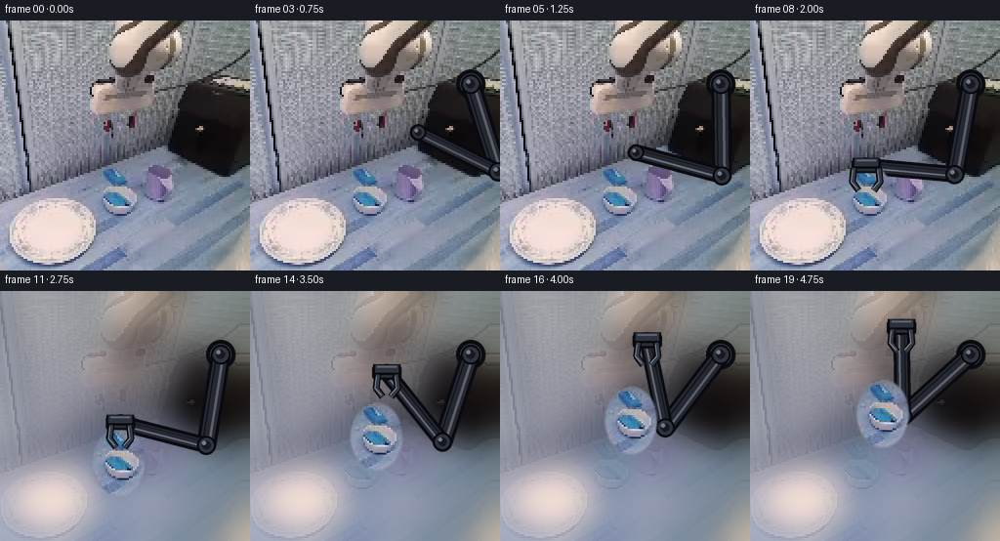
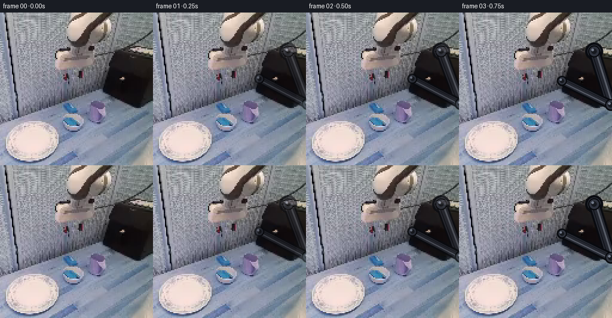

CODING AGENTS AS PIXEL WORLD MODELS
traex/DeepSeek-V4.1-Flash · common50_0043
点击播放 · 原生 RGB 像素
逐轮保存的候选
回放视频、检查图与代码变化。
每份候选均可单独播放。实际图片检查记录在下方工具轨迹中。
候选 01播放与检查图
点击播放 · 原生 RGB 像素


展开代码变化
--- 上一保存版本
+++ 本次保存版本
@@ -0,0 +1,441 @@
+from __future__ import annotations
+
+import math
+from pathlib import Path
+
+import numpy as np
+from PIL import Image, ImageDraw, ImageFilter
+
+import artifact_io
+
+
+ROOT = Path(__file__).resolve().parent
+WIDTH = HEIGHT = 256
+FRAME_COUNT = 20
+
+
+def smoothstep(value: float) -> float:
+ value = float(np.clip(value, 0.0, 1.0))
+ return value * value * (3.0 - 2.0 * value)
+
+
+def ease_in_out(value: float) -> float:
+ value = float(np.clip(value, 0.0, 1.0))
+ return 0.5 - 0.5 * math.cos(math.pi * value)
+
+
+def bilinear_sample(image: np.ndarray, x: np.ndarray, y: np.ndarray) -> np.ndarray:
+ """Sample an HxWxC float image at floating-point coordinates."""
+ h, w = image.shape[:2]
+ x = np.clip(x, 0.0, w - 1.001)
+ y = np.clip(y, 0.0, h - 1.001)
+ x0 = np.floor(x).astype(np.int32)
+ y0 = np.floor(y).astype(np.int32)
+ x1 = np.minimum(x0 + 1, w - 1)
+ y1 = np.minimum(y0 + 1, h - 1)
+ fx = (x - x0)[..., None]
+ fy = (y - y0)[..., None]
+ top = image[y0, x0] * (1.0 - fx) + image[y0, x1] * fx
+ bottom = image[y1, x0] * (1.0 - fx) + image[y1, x1] * fx
+ return top * (1.0 - fy) + bottom * fy
+
+
+def make_bowl_mask() -> np.ndarray:
+ """A soft oval covering the visible blue-filled bowl and its white rim."""
+ yy, xx = np.mgrid[:HEIGHT, :WIDTH].astype(np.float32)
+ cx, cy = 119.0, 181.0
+ rx, ry = 27.0, 35.0
+ distance = np.sqrt(((xx - cx) / rx) ** 2 + ((yy - cy) / ry) ** 2)
+ alpha = np.clip((1.045 - distance) / 0.115, 0.0, 1.0)
+ return alpha * alpha * (3.0 - 2.0 * alpha)
+
+
+def diffuse_inpaint(image: np.ndarray, mask: np.ndarray) -> np.ndarray:
+ """Fill the source-bowl footprint from its surrounding table texture."""
+ base = Image.fromarray(np.clip(image, 0, 255).astype(np.uint8))
+ work = base.filter(ImageFilter.GaussianBlur(14)).convert("RGB")
+ work_np = np.asarray(work).astype(np.float32)
+ source = image.astype(np.float32)
+ hard_mask = mask > 0.08
+
+ # Diffusion from the boundary gives a smooth continuation of the tabletop.
+ for _ in range(34):
+ blurred = np.asarray(
+ Image.fromarray(np.clip(work_np, 0, 255).astype(np.uint8)).filter(
+ ImageFilter.GaussianBlur(2.4)
+ )
+ ).astype(np.float32)
+ work_np[hard_mask] = blurred[hard_mask]
+
+ # Keep a small amount of the local high-frequency table texture.
+ low = np.asarray(base.filter(ImageFilter.GaussianBlur(3.2))).astype(np.float32)
+ residual = source - low
+ yy, xx = np.mgrid[:HEIGHT, :WIDTH]
+ sample_x = np.clip(xx + 9, 0, WIDTH - 1)
+ sample_y = np.clip(yy - 3, 0, HEIGHT - 1)
+ copied_residual = residual[sample_y, sample_x]
+ work_np += copied_residual * 0.18
+ return np.clip(work_np, 0, 255).astype(np.uint8)
+
+
+def soft_shadow(
+ image: Image.Image, center: tuple[float, float], radii: tuple[float, float], opacity: float
+) -> Image.Image:
+ shadow = Image.new("RGBA", (WIDTH, HEIGHT), (0, 0, 0, 0))
+ draw = ImageDraw.Draw(shadow)
+ cx, cy = center
+ rx, ry = radii
+ draw.ellipse((cx - rx, cy - ry, cx + rx, cy + ry), fill=(8, 13, 20, int(255 * opacity)))
+ shadow = shadow.filter(ImageFilter.GaussianBlur(8.5))
+ return Image.alpha_composite(image.convert("RGBA"), shadow)
+
+
+def transform_bowl(
+ original: np.ndarray,
+ mask: np.ndarray,
+ center: tuple[float, float],
+ translation: tuple[float, float],
+ angle_degrees: float,
+) -> tuple[np.ndarray, np.ndarray]:
+ """Return a rigidly transformed bowl patch and its alpha mask."""
+ cx, cy = center
+ dx, dy = translation
+ theta = math.radians(angle_degrees)
+ cos_t, sin_t = math.cos(theta), math.sin(theta)
+
+ # PIL's affine transform is expressed as output-to-input coordinates.
+ ox, oy = cx + dx, cy + dy
+ matrix = (
+ cos_t,
+ sin_t,
+ cx - cos_t * ox - sin_t * oy,
+ -sin_t,
+ cos_t,
+ cy + sin_t * ox - cos_t * oy,
+ )
+ warped = Image.fromarray(original).transform(
+ (WIDTH, HEIGHT), Image.Transform.AFFINE, matrix, resample=Image.Resampling.BICUBIC
+ )
+ warped_mask = Image.fromarray(np.clip(mask * 255, 0, 255).astype(np.uint8)).transform(
+ (WIDTH, HEIGHT), Image.Transform.AFFINE, matrix, resample=Image.Resampling.BILINEAR
+ )
+ return np.asarray(warped), np.asarray(warped_mask).astype(np.float32) / 255.0
+
+
+def inverse_kinematics(
+ base: np.ndarray, target: np.ndarray, upper: float, fore: float
+) -> tuple[np.ndarray, np.ndarray]:
+ delta = target - base
+ distance = float(np.linalg.norm(delta))
+ distance = float(np.clip(distance, abs(upper - fore) + 0.5, upper + fore - 0.5))
+ direction = delta / max(float(np.linalg.norm(delta)), 1e-6)
+ along = (upper * upper - fore * fore + distance * distance) / (2.0 * distance)
+ height = math.sqrt(max(upper * upper - along * along, 0.0))
+ perpendicular = np.array([-direction[1], direction[0]])
+
+ # The elbow bends toward the lower-left side of the reach.
+ elbow_a = base + direction * along + perpendicular * height
+ elbow_b = base + direction * along - perpendicular * height
+ if elbow_a[1] > elbow_b[1]:
+ elbow = elbow_a
+ else:
+ elbow = elbow_b
+ wrist = base + direction * min(distance, upper + fore - 0.5)
+ return elbow, wrist
+
+
+def capsule_points(p0: np.ndarray, p1: np.ndarray, width: float) -> list[tuple[float, float]]:
+ direction = p1 - p0
+ length = float(np.linalg.norm(direction))
+ if length < 1e-5:
+ return [(float(p0[0]), float(p0[1]))]
+ normal = np.array([-direction[1], direction[0]]) / length * (width * 0.5)
+ return [
+ (float(p0[0] + normal[0]), float(p0[1] + normal[1])),
+ (float(p1[0] + normal[0]), float(p1[1] + normal[1])),
+ (float(p1[0] - normal[0]), float(p1[1] - normal[1])),
+ (float(p0[0] - normal[0]), float(p0[1] - normal[1])),
+ ]
+
+
+def draw_metallic_link(
+ draw: ImageDraw.ImageDraw,
+ p0: np.ndarray,
+ p1: np.ndarray,
+ width: float,
+ scale: int,
+ front: bool = True,
+) -> None:
+ a = p0 * scale
+ b = p1 * scale
+ wa = width * scale
+ draw.line((*a, *b), fill=(8, 10, 15, 255), width=int(wa + 6 * scale))
+ draw.ellipse(
+ (a[0] - wa / 2 - 3 * scale, a[1] - wa / 2 - 3 * scale,
+ a[0] + wa / 2 + 3 * scale, a[1] + wa / 2 + 3 * scale),
+ fill=(8, 10, 15, 255),
+ )
+ draw.ellipse(
+ (b[0] - wa / 2 - 3 * scale, b[1] - wa / 2 - 3 * scale,
+ b[0] + wa / 2 + 3 * scale, b[1] + wa / 2 + 3 * scale),
+ fill=(8, 10, 15, 255),
+ )
+ draw.line((*a, *b), fill=(37, 40, 49, 255), width=int(wa))
+ draw.ellipse(
+ (a[0] - wa / 2, a[1] - wa / 2, a[0] + wa / 2, a[1] + wa / 2),
+ fill=(44, 47, 57, 255),
+ )
+ draw.ellipse(
+ (b[0] - wa / 2, b[1] - wa / 2, b[0] + wa / 2, b[1] + wa / 2),
+ fill=(44, 47, 57, 255),
+ )
+
+ direction = b - a
+ length = max(float(np.linalg.norm(direction)), 1.0)
+ normal = np.array([-direction[1], direction[0]]) / length
+ highlight_a = a - normal * wa * 0.19
+ highlight_b = b - normal * wa * 0.19
+ draw.line(
+ (*highlight_a, *highlight_b),
+ fill=(103, 109, 123, 210 if front else 150),
+ width=max(int(wa * 0.20), scale),
+ )
+ edge_a = a + normal * wa * 0.29
+ edge_b = b + normal * wa * 0.29
+ draw.line(
+ (*edge_a, *edge_b),
+ fill=(16, 18, 24, 255),
+ width=max(int(wa * 0.10), scale),
+ )
+
+
+def draw_joint(
+ draw: ImageDraw.ImageDraw, center: np.ndarray, radius: float, scale: int
+) -> None:
+ c = center * scale
+ r = radius * scale
+ draw.ellipse((c[0] - r - 2 * scale, c[1] - r - 2 * scale,
+ c[0] + r + 2 * scale, c[1] + r + 2 * scale),
+ fill=(7, 9, 13, 255))
+ draw.ellipse((c[0] - r, c[1] - r, c[0] + r, c[1] + r), fill=(47, 51, 62, 255))
+ draw.ellipse((c[0] - r * 0.58, c[1] - r * 0.58,
+ c[0] + r * 0.58, c[1] + r * 0.58),
+ fill=(22, 25, 31, 255))
+ draw.ellipse((c[0] - r * 0.38 - 1.5 * scale, c[1] - r * 0.38 - 1.5 * scale,
+ c[0] - r * 0.02, c[1] - r * 0.02),
+ fill=(113, 121, 137, 255))
+
+
+def draw_gripper(
+ draw: ImageDraw.ImageDraw,
+ wrist: np.ndarray,
+ openness: float,
+ angle: float,
+ scale: int,
+) -> None:
+ """Draw a compact parallel gripper with rigid, mirrored fingers."""
+ w = wrist * scale
+ s = scale
+ draw.line((w[0] - 14 * s, w[1] - 3 * s, w[0] + 14 * s, w[1] - 3 * s),
+ fill=(7, 9, 13, 255), width=11 * s)
+ draw.line((w[0] - 12 * s, w[1] - 4 * s, w[0] + 12 * s, w[1] - 4 * s),
+ fill=(45, 49, 60, 255), width=8 * s)
+ draw.line((w[0] - 10 * s, w[1] - 6 * s, w[0] + 10 * s, w[1] - 6 * s),
+ fill=(93, 99, 114, 255), width=2 * s)
+
+ spread = (8.0 + 8.0 * openness) * s
+ drop = 25.0 * s
+ inward = 5.0 * s
+ for sign in (-1.0, 1.0):
+ root = np.array([w[0] + sign * spread, w[1] + 2 * s])
+ bend = np.array([w[0] + sign * (spread + 1.5 * s), w[1] + 16 * s])
+ tip = np.array([w[0] + sign * (spread - inward), w[1] + drop])
+ draw.line((*root, *bend, *tip), fill=(7, 9, 13, 255), width=7 * s, joint="curve")
+ draw.line((*root, *bend, *tip), fill=(54, 58, 69, 255), width=4 * s, joint="curve")
+ draw.line(
+ (root[0] - 1.2 * s, root[1] + 2 * s,
+ bend[0] - 1.2 * s, bend[1], tip[0] - 1.2 * s, tip[1] - 2 * s),
+ fill=(122, 129, 144, 255),
+ width=max(1, int(1.3 * s)),
+ )
+
+
+def render_arm(
+ base: np.ndarray,
+ elbow: np.ndarray,
+ wrist: np.ndarray,
+ openness: float,
+ alpha: float,
+ front_fingers_only: bool = False,
+) -> Image.Image:
+ scale = 3
+ layer = Image.new("RGBA", (WIDTH * scale, HEIGHT * scale), (0, 0, 0, 0))
+ draw = ImageDraw.Draw(layer)
+
+ if not front_fingers_only:
+ # Mount and the two rigid links.
+ draw.ellipse(
+ ((base[0] - 15) * scale, (base[1] - 15) * scale,
+ (base[0] + 15) * scale, (base[1] + 15) * scale),
+ fill=(9, 11, 16, 255),
+ )
+ draw.ellipse(
+ ((base[0] - 11) * scale, (base[1] - 11) * scale,
+ (base[0] + 11) * scale, (base[1] + 11) * scale),
+ fill=(50, 54, 65, 255),
+ )
+ draw_metallic_link(draw, base, elbow, 14.0, scale)
+ draw_metallic_link(draw, elbow, wrist, 11.0, scale)
+ draw_joint(draw, base, 8.0, scale)
+ draw_joint(draw, elbow, 7.5, scale)
+ draw_joint(draw, wrist, 6.0, scale)
+
+ # The wrist block is always part of the arm silhouette.
+ if front_fingers_only:
+ w = wrist * scale
+ draw.rounded_rectangle(
+ (w[0] - 15 * scale, w[1] - 7 * scale, w[0] + 15 * scale, w[1] + 7 * scale),
+ radius=3 * scale,
+ fill=(40, 44, 54, 255),
+ outline=(8, 10, 14, 255),
+ width=2 * scale,
+ )
+ draw.line((w[0] - 11 * scale, w[1] - 5 * scale,
+ w[0] + 11 * scale, w[1] - 5 * scale),
+ fill=(101, 108, 124, 255), width=2 * scale)
+ draw_gripper(draw, wrist, openness, 0.0, scale)
+
+ layer = layer.resize((WIDTH, HEIGHT), Image.Resampling.LANCZOS)
+ if alpha < 1.0:
+ values = np.asarray(layer).copy()
+ values[..., 3] = np.clip(values[..., 3].astype(np.float32) * alpha, 0, 255).astype(np.uint8)
+ layer = Image.fromarray(values)
+ return layer
+
+
+def arm_pose(frame: int, bowl_center: tuple[float, float]) -> tuple[np.ndarray, np.ndarray, np.ndarray, float]:
+ base = np.array([226.0, 65.0], dtype=np.float32)
+ upper, fore = 94.0, 91.0
+
+ approach_start = np.array([178.0, 111.0], dtype=np.float32)
+ grasp_wrist = np.array([119.0, 148.0], dtype=np.float32)
+ if frame <= 2:
+ wrist_target = approach_start
+ elif frame <= 7:
+ t = ease_in_out((frame - 2) / 5.0)
+ wrist_target = approach_start * (1.0 - t) + grasp_wrist * t
+ else:
+ wrist_target = np.array([bowl_center[0], bowl_center[1] - 33.0], dtype=np.float32)
+
+ # Keep the wrist a little above the bowl while the fingers close.
+ if 7 <= frame <= 9:
+ close_t = smoothstep((frame - 7) / 2.0)
+ wrist_target[1] += 2.0 * close_t
+
+ elbow, wrist = inverse_kinematics(base, wrist_target, upper, fore)
+ openness = 1.0
+ if frame <= 7:
+ openness = 1.0
+ elif frame <= 9:
+ openness = 1.0 - 0.82 * smoothstep((frame - 7) / 2.0)
+ else:
+ openness = 0.18
+ return base, elbow, wrist, openness
+
+
+def bowl_state(frame: int) -> tuple[float, float, float, float]:
+ """Return bowl center, vertical translation, angle, and shadow strength."""
+ cx, cy = 119.0, 181.0
+ if frame <= 9:
+ return cx, cy, 0.0, 0.0, 0.12
+
+ t = ease_in_out((frame - 9) / 9.0)
+ lift_x = 18.0 * t
+ lift_y = -55.0 * t
+ angle = 1.6 * t
+ # Tiny settling overshoot after the lift, without deforming the bowl.
+ if frame >= 17:
+ settle = math.sin((frame - 17) * math.pi * 0.55) * 1.1
+ lift_y += settle
+ return cx + lift_x, cy + lift_y, lift_x, lift_y, 0.22 + 0.10 * t
+
+
+def compose_frame(
+ frame_index: int,
+ original: np.ndarray,
+ clean_background: np.ndarray,
+ bowl_mask: np.ndarray,
+) -> np.ndarray:
+ cx, cy, dx, dy, shadow_strength = bowl_state(frame_index)
+
+ if frame_index < 9:
+ canvas = Image.fromarray(original)
+ else:
+ canvas = Image.fromarray(clean_background)
+
+ # A contact shadow is placed under the bowl and fades as it leaves the table.
+ if frame_index >= 9:
+ shadow_center = (cx + dx + 2.0, cy + dy + 15.0)
+ canvas = soft_shadow(canvas, shadow_center, (27.0, 10.5), shadow_strength)
+ else:
+ canvas = soft_shadow(canvas, (cx + 2.0, cy + 14.0), (26.0, 9.0), 0.055)
+
+ # The moving arm is kept behind the bowl until the gripper closes.
+ base, elbow, wrist, openness = arm_pose(frame_index, (cx + dx, cy + dy))
+ arm_alpha = 0.0 if frame_index == 0 else min(1.0, 0.42 + 0.19 * frame_index)
+ arm_layer = render_arm(base, elbow, wrist, openness, arm_alpha)
+ canvas = Image.alpha_composite(canvas.convert("RGBA"), arm_layer)
+
+ # The bowl is one rigid image layer: translation and a sub-two-degree roll only.
+ warped_bowl, warped_alpha = transform_bowl(
+ original, bowl_mask, (cx, cy), (dx, dy), 1.6 * smoothstep(max(0.0, (frame_index - 9) / 9.0))
+ )
+ bowl_alpha = warped_alpha[..., None]
+ canvas_np = np.asarray(canvas.convert("RGB")).astype(np.float32)
+ # Preserve the original lighting while adding a slight lift highlight.
+ highlight = np.clip((cy - np.mgrid[:HEIGHT, :WIDTH][0]) / 180.0, 0.0, 1.0)[..., None] * 2.0
+ lifted = np.clip(warped_bowl.astype(np.float32) + highlight, 0, 255)
+ canvas_np = canvas_np * (1.0 - bowl_alpha) + lifted * bowl_alpha
+ canvas = Image.fromarray(np.clip(canvas_np, 0, 255).astype(np.uint8))
+
+ # Fingers sit in front of the bowl after contact, making the grasp readable.
+ if frame_index >= 6:
+ front = render_arm(base, elbow, wrist, openness, arm_alpha, front_fingers_only=True)
+ canvas = Image.alpha_composite(canvas.convert("RGBA"), front)
+
+ result = np.asarray(canvas.convert("RGB")).copy()
+ if frame_index == 0:
+ result = original.copy()
+ return result
+
+
+def main() -> None:
+ first_path = ROOT / "first_frame.png"
+ original = np.asarray(Image.open(first_path).convert("RGB"))
+ if original.shape != (HEIGHT, WIDTH, 3):
+ raise ValueError(f"Unexpected first-frame shape: {original.shape}")
+
+ bowl_mask = make_bowl_mask()
+ clean_background = diffuse_inpaint(original, bowl_mask)
+ Image.fromarray(clean_background).save(ROOT / ".tmp" / "clean_background.png")
+
+ frames = np.empty((FRAME_COUNT, HEIGHT, WIDTH, 3), dtype=np.uint8)
+ for index in range(FRAME_COUNT):
+ frames[index] = compose_frame(index, original, clean_background, bowl_mask)
+
+ if not np.array_equal(frames[0], original):
+ raise AssertionError("Frame 0 is not pixel-identical to first_frame.png")
+ artifact_io.save(frames, ROOT)
+
+ # Compact numerical audit of the sequence for reproducibility.
+ means = frames.reshape(FRAME_COUNT, -1, 3).mean(axis=(1, 2))
+ diffs = np.abs(np.diff(frames.astype(np.int16), axis=0)).mean(axis=(1, 2, 3))
+ with (ROOT / ".tmp" / "generation_audit.txt").open("w") as handle:
+ handle.write("frame_mean_rgb,mean_abs_delta_from_previous\n")
+ for index in range(FRAME_COUNT):
+ delta = 0.0 if index == 0 else float(diffs[index - 1])
+ handle.write(f"{index:02d},{means[index].round(4).tolist()},{delta:.5f}\n")
+
+
+if __name__ == "__main__":
+ main()
候选 02播放与检查图
点击播放 · 原生 RGB 像素

展开代码变化
--- 上一保存版本
+++ 本次保存版本
@@ -43,18 +43,23 @@
def make_bowl_mask() -> np.ndarray:
"""A soft oval covering the visible blue-filled bowl and its white rim."""
yy, xx = np.mgrid[:HEIGHT, :WIDTH].astype(np.float32)
- cx, cy = 119.0, 181.0
- rx, ry = 27.0, 35.0
+ cx, cy = 53.0, 216.0
+ rx, ry = 46.0, 37.0
distance = np.sqrt(((xx - cx) / rx) ** 2 + ((yy - cy) / ry) ** 2)
- alpha = np.clip((1.045 - distance) / 0.115, 0.0, 1.0)
- return alpha * alpha * (3.0 - 2.0 * alpha)
+ alpha = np.clip((1.045 - distance) / 0.11, 0.0, 1.0)
+ bowl = alpha * alpha * (3.0 - 2.0 * alpha)
+
+ # The blue contents are visible along the bowl's right-hand inner wall.
+ content_distance = np.sqrt(((xx - 106.0) / 13.0) ** 2 + ((yy - 203.0) / 25.0) ** 2)
+ content = np.clip((1.06 - content_distance) / 0.12, 0.0, 1.0)
+ content = content * content * (3.0 - 2.0 * content)
+ return np.maximum(bowl, content)
def diffuse_inpaint(image: np.ndarray, mask: np.ndarray) -> np.ndarray:
"""Fill the source-bowl footprint from its surrounding table texture."""
base = Image.fromarray(np.clip(image, 0, 255).astype(np.uint8))
- work = base.filter(ImageFilter.GaussianBlur(14)).convert("RGB")
- work_np = np.asarray(work).astype(np.float32)
+ work_np = image.astype(np.float32).copy()
source = image.astype(np.float32)
hard_mask = mask > 0.08
@@ -317,8 +322,8 @@
base = np.array([226.0, 65.0], dtype=np.float32)
upper, fore = 94.0, 91.0
- approach_start = np.array([178.0, 111.0], dtype=np.float32)
- grasp_wrist = np.array([119.0, 148.0], dtype=np.float32)
+ approach_start = np.array([174.0, 99.0], dtype=np.float32)
+ grasp_wrist = np.array([54.0, 174.0], dtype=np.float32)
if frame <= 2:
wrist_target = approach_start
elif frame <= 7:
@@ -345,14 +350,14 @@
def bowl_state(frame: int) -> tuple[float, float, float, float]:
"""Return bowl center, vertical translation, angle, and shadow strength."""
- cx, cy = 119.0, 181.0
+ cx, cy = 53.0, 216.0
if frame <= 9:
return cx, cy, 0.0, 0.0, 0.12
t = ease_in_out((frame - 9) / 9.0)
- lift_x = 18.0 * t
- lift_y = -55.0 * t
- angle = 1.6 * t
+ lift_x = 19.0 * t
+ lift_y = -54.0 * t
+ angle = 1.2 * t
# Tiny settling overshoot after the lift, without deforming the bowl.
if frame >= 17:
settle = math.sin((frame - 17) * math.pi * 0.55) * 1.1
@@ -376,9 +381,9 @@
# A contact shadow is placed under the bowl and fades as it leaves the table.
if frame_index >= 9:
shadow_center = (cx + dx + 2.0, cy + dy + 15.0)
- canvas = soft_shadow(canvas, shadow_center, (27.0, 10.5), shadow_strength)
+ canvas = soft_shadow(canvas, shadow_center, (44.0, 11.0), shadow_strength)
else:
- canvas = soft_shadow(canvas, (cx + 2.0, cy + 14.0), (26.0, 9.0), 0.055)
+ canvas = soft_shadow(canvas, (cx + 2.0, cy + 14.0), (43.0, 12.0), 0.055)
# The moving arm is kept behind the bowl until the gripper closes.
base, elbow, wrist, openness = arm_pose(frame_index, (cx + dx, cy + dy))
@@ -388,7 +393,7 @@
# The bowl is one rigid image layer: translation and a sub-two-degree roll only.
warped_bowl, warped_alpha = transform_bowl(
- original, bowl_mask, (cx, cy), (dx, dy), 1.6 * smoothstep(max(0.0, (frame_index - 9) / 9.0))
+ original, bowl_mask, (cx, cy), (dx, dy), 1.2 * smoothstep(max(0.0, (frame_index - 9) / 9.0))
)
bowl_alpha = warped_alpha[..., None]
canvas_np = np.asarray(canvas.convert("RGB")).astype(np.float32)
候选 03播放与检查图
候选 04播放与检查图
点击播放 · 原生 RGB 像素

展开代码变化
--- 上一保存版本
+++ 本次保存版本
@@ -58,29 +58,23 @@
def diffuse_inpaint(image: np.ndarray, mask: np.ndarray) -> np.ndarray:
"""Fill the source-bowl footprint from its surrounding table texture."""
- base = Image.fromarray(np.clip(image, 0, 255).astype(np.uint8))
- work_np = image.astype(np.float32).copy()
- source = image.astype(np.float32)
- hard_mask = mask > 0.08
-
- # Diffusion from the boundary gives a smooth continuation of the tabletop.
- for _ in range(34):
+ result = image.astype(np.float32).copy()
+ hard_mask = mask > 0.015
+
+ # Estimate the tabletop by interpolation across the removed footprint.
+ for _ in range(150):
blurred = np.asarray(
- Image.fromarray(np.clip(work_np, 0, 255).astype(np.uint8)).filter(
- ImageFilter.GaussianBlur(2.4)
+ Image.fromarray(np.clip(result, 0, 255).astype(np.uint8)).filter(
+ ImageFilter.GaussianBlur(1.4)
)
).astype(np.float32)
- work_np[hard_mask] = blurred[hard_mask]
-
- # Keep a small amount of the local high-frequency table texture.
- low = np.asarray(base.filter(ImageFilter.GaussianBlur(3.2))).astype(np.float32)
- residual = source - low
- yy, xx = np.mgrid[:HEIGHT, :WIDTH]
- sample_x = np.clip(xx + 9, 0, WIDTH - 1)
- sample_y = np.clip(yy - 3, 0, HEIGHT - 1)
- copied_residual = residual[sample_y, sample_x]
- work_np += copied_residual * 0.18
- return np.clip(work_np, 0, 255).astype(np.uint8)
+ result[hard_mask] = blurred[hard_mask]
+
+ # Restore subtle sensor grain and the local warm/cool lighting gradient.
+ yy, xx = np.mgrid[:HEIGHT, :WIDTH].astype(np.float32)
+ grain = np.sin(xx * 1.73 + yy * 0.91) * 0.8 + np.sin(xx * 0.37 - yy * 1.17) * 0.55
+ result[hard_mask] += grain[hard_mask, None]
+ return np.clip(np.rint(result), 0, 255).astype(np.uint8)
def soft_shadow(
@@ -326,8 +320,8 @@
grasp_wrist = np.array([54.0, 174.0], dtype=np.float32)
if frame <= 2:
wrist_target = approach_start
- elif frame <= 7:
- t = ease_in_out((frame - 2) / 5.0)
+ elif frame <= 8:
+ t = ease_in_out((frame - 2) / 6.0)
wrist_target = approach_start * (1.0 - t) + grasp_wrist * t
else:
wrist_target = np.array([bowl_center[0], bowl_center[1] - 33.0], dtype=np.float32)
@@ -335,14 +329,14 @@
# Keep the wrist a little above the bowl while the fingers close.
if 7 <= frame <= 9:
close_t = smoothstep((frame - 7) / 2.0)
- wrist_target[1] += 2.0 * close_t
+ wrist_target[1] += 1.5 * close_t
elbow, wrist = inverse_kinematics(base, wrist_target, upper, fore)
openness = 1.0
- if frame <= 7:
+ if frame <= 6:
openness = 1.0
- elif frame <= 9:
- openness = 1.0 - 0.82 * smoothstep((frame - 7) / 2.0)
+ elif frame <= 8:
+ openness = 1.0 - 0.82 * smoothstep((frame - 6) / 2.0)
else:
openness = 0.18
return base, elbow, wrist, openness
@@ -351,16 +345,16 @@
def bowl_state(frame: int) -> tuple[float, float, float, float]:
"""Return bowl center, vertical translation, angle, and shadow strength."""
cx, cy = 53.0, 216.0
- if frame <= 9:
+ if frame <= 10:
return cx, cy, 0.0, 0.0, 0.12
- t = ease_in_out((frame - 9) / 9.0)
+ t = ease_in_out((frame - 10) / 8.0)
lift_x = 19.0 * t
lift_y = -54.0 * t
angle = 1.2 * t
# Tiny settling overshoot after the lift, without deforming the bowl.
if frame >= 17:
- settle = math.sin((frame - 17) * math.pi * 0.55) * 1.1
+ settle = math.sin((frame - 17) * math.pi * 0.55) * 0.8
lift_y += settle
return cx + lift_x, cy + lift_y, lift_x, lift_y, 0.22 + 0.10 * t
@@ -373,17 +367,10 @@
) -> np.ndarray:
cx, cy, dx, dy, shadow_strength = bowl_state(frame_index)
- if frame_index < 9:
+ if frame_index <= 10:
canvas = Image.fromarray(original)
else:
canvas = Image.fromarray(clean_background)
-
- # A contact shadow is placed under the bowl and fades as it leaves the table.
- if frame_index >= 9:
- shadow_center = (cx + dx + 2.0, cy + dy + 15.0)
- canvas = soft_shadow(canvas, shadow_center, (44.0, 11.0), shadow_strength)
- else:
- canvas = soft_shadow(canvas, (cx + 2.0, cy + 14.0), (43.0, 12.0), 0.055)
# The moving arm is kept behind the bowl until the gripper closes.
base, elbow, wrist, openness = arm_pose(frame_index, (cx + dx, cy + dy))
@@ -393,7 +380,7 @@
# The bowl is one rigid image layer: translation and a sub-two-degree roll only.
warped_bowl, warped_alpha = transform_bowl(
- original, bowl_mask, (cx, cy), (dx, dy), 1.2 * smoothstep(max(0.0, (frame_index - 9) / 9.0))
+ original, bowl_mask, (cx, cy), (dx, dy), 1.2 * smoothstep(max(0.0, (frame_index - 10) / 8.0))
)
bowl_alpha = warped_alpha[..., None]
canvas_np = np.asarray(canvas.convert("RGB")).astype(np.float32)
候选 05播放与检查图
候选 06播放与检查图
点击播放 · 原生 RGB 像素
展开代码变化
--- 上一保存版本
+++ 本次保存版本
@@ -70,9 +70,9 @@
).astype(np.float32)
result[hard_mask] = blurred[hard_mask]
- # Restore subtle sensor grain and the local warm/cool lighting gradient.
+ # Restore only very light sensor grain; the tabletop already carries its lighting.
yy, xx = np.mgrid[:HEIGHT, :WIDTH].astype(np.float32)
- grain = np.sin(xx * 1.73 + yy * 0.91) * 0.8 + np.sin(xx * 0.37 - yy * 1.17) * 0.55
+ grain = np.sin(xx * 1.73 + yy * 0.91) * 0.38 + np.sin(xx * 0.37 - yy * 1.17) * 0.26
result[hard_mask] += grain[hard_mask, None]
return np.clip(np.rint(result), 0, 255).astype(np.uint8)
可观测工具轨迹
实际执行的命令与返回图片。
命令 1exit 0
/bin/bash -c "pwd && rg --files -g '"'!*__pycache__*'"' | sed -n '1,160p'"
命令 2exit 0
/bin/bash -c "sed -n '1,240p' prompt.txt"
命令 3exit 0
/bin/bash -c "sed -n '1,280p' GENERATION_RULES.md"
命令 4exit 0
/bin/bash -c 'ls -lah && file first_frame.png 2>/dev/null || true'
命令 5exit 0
/bin/bash -c "sed -n '1,260p' artifact_io.py"
命令 6exit 0
/bin/bash -c "sed -n '1,260p' player_template.html"
命令 7exit 0
/bin/bash -c "cat task_spec.json && python - <<'PY'
from PIL import Image
import numpy as np
im=Image.open('first_frame.png')
print(im.mode, im.size)
a=np.array(im.convert('RGB'))
print(a.shape, a.dtype, a.min(), a.max(), a.mean((0,1)))
print('corners',a[0,0],a[0,-1],a[-1,0],a[-1,-1])
PY"命令 8exit 0
/bin/bash -c "python - <<'PY'
from PIL import Image
import numpy as np
im=np.array(Image.open('first_frame.png').convert('RGB'))
# resize average 4x4 and print luminance ascii + dominant hue chars
small=np.array(Image.open('first_frame.png').convert('RGB').resize((64,64),Image.Resampling.BOX))
y=(.299*small[:,:,0]+.587*small[:,:,1]+.114*small[:,:,2])
chars=' .:-=+*#%@'
for row in y:
print(''.join(chars[min(9,int(v/256*10))] for v in row))
PY"命令 9exit 0
/bin/bash -c "python - <<'PY'
from PIL import Image
import numpy as np
im=np.array(Image.open('first_frame.png').convert('RGB')).astype(float)
# 16x16 RGB mean grid in compact hex
for y in range(0,256,16):
row=[]
for x in range(0,256,16):
c=im[y:y+16,x:x+16].mean((0,1)).round().astype(int)
row.append('%02x%02x%02x'%tuple(c))
print(' '.join(row))
PY"命令 10exit 0
/bin/bash -c "python - <<'PY'
from PIL import Image
import numpy as np
im=np.array(Image.open('first_frame.png').convert('RGB')).astype(float)
r,g,b=im.transpose(2,0,1)
mx=im.max(2); mn=im.min(2); sat=(mx-mn)/(mx+1e-6)
# blue score: b dominant and reasonable saturation
score=(b-r)*.6+(b-g)*.8 + sat*80
inds=np.argsort(score.ravel())[-30:][::-1]
for i in inds[:30]:
y,x=divmod(int(i),256); print((x,y), im[y,x].astype(int), 'score',round(score[y,x],1))
# saturated blue count by 16px cell
mask=(b>r*1.15)&(b>g*1.05)&(sat>.25)&(mx>50)
for y0 in range(0,256,16):
print(''.join('#' if mask[y0:y0+16,x:x+16].mean()>.3 else '+' if mask[y0:y0+16,x:x+16].mean()>.1 else '.' for x in range(0,256,16)))
PY"命令 11exit 0
/bin/bash -c "python - <<'PY' mods=['cv2','scipy','skimage','imageio','matplotlib'] for m in mods: try: x=__import__(m); print(m,'ok',getattr(x,'__version__','')) except Exception as e: print(m,'no',e) PY"
命令 12exit 0
/bin/bash -c "python - <<'PY'
from PIL import Image
import numpy as np
im=np.array(Image.open('first_frame.png').convert('RGB')).astype(np.float32)
# quantize colors and show most common in 8"'^3 bins
q=(im//16).astype(int)
key=q[:,:,0]*64+q[:,:,1]*8+q[:,:,2]
vals,cnt=np.unique(key,return_counts=True)
order=np.argsort(cnt)[-25:][::-1]
for k,c in zip(vals[order],cnt[order]):
z=k; r=z//64; z%=64; g=z//8; b=z%8
col=np.array([r*16+8,g*16+8,b*16+8])
print(c, col, '"'pct',round(100*c/(256*256),2))
# grayscale/color stats on spatial 32-grid
print('grid mean RGB')
for y in range(0,256,32):
print(' '.join('%02x%02x%02x'%tuple(im[y:y+32,x:x+32].mean((0,1)).astype(int)) for x in range(0,256,32)))
PY"命令 13exit 0
/bin/bash -c "python - <<'PY'
import cv2
import numpy as np
from PIL import Image
im=cv2.imread('first_frame.png')
# print edge locations for Canny per coarse grid
edges=cv2.Canny(cv2.cvtColor(im,cv2.COLOR_BGR2GRAY),60,140)
for y in range(0,256,4):
print(''.join('#' if edges[y:y+4,x:x+4].mean()>30 else '+' if edges[y:y+4,x:x+4].mean()>10 else '.' for x in range(0,256,4)))
PY"命令 14exit 0
/bin/bash -c "python - <<'PY'
from PIL import Image
im=Image.open('first_frame.png')
print(im.info)
print(im.getexif())
PY"命令 15exit 0
/bin/bash -c "python - <<'PY'
from PIL import Image
import numpy as np
im=np.array(Image.open('first_frame.png').convert('RGB')).astype(np.float32)
# ascii hue classified colors at 2px steps / downsample 4x4
sm=np.array(Image.open('first_frame.png').convert('RGB').resize((64,64),Image.Resampling.BOX)).astype(float)
for y in range(64):
s=''
for x in range(64):
r,g,b=sm[y,x]
mx=max(r,g,b); mn=min(r,g,b)
if mx<25: c='K'
elif mx-mn<15: c='.' if mx<80 else ':' if mx<150 else '='
elif r>g*1.15 and r>b*1.2: c='R' if mx<130 else 'r'
elif b>r*1.12 and b>g*1.02: c='B' if mx<140 else 'b'
elif r>g*1.08 and g>b*1.15: c='Y' if mx<150 else 'y'
elif g>r*1.08 and g>b*1.08: c='G' if mx<130 else 'g'
else: c='n'
s+=c
print(s)
PY"命令 16exit 0
/bin/bash -c "python - <<'PY'
from PIL import Image
import numpy as np
im=np.array(Image.open('first_frame.png').convert('RGB')).astype(float)
# local horizontal gradients summed on bands; strongest vertical/horiz lines
lum=.299*im[:,:,0]+.587*im[:,:,1]+.114*im[:,:,2]
gx=np.abs(np.diff(lum,axis=1)); gy=np.abs(np.diff(lum,axis=0))
print('vertical edges x by y band')
for y0,y1 in [(0,60),(60,100),(100,140),(140,180),(180,220),(220,256)]:
vals=gx[y0:y1].mean(0); ids=np.argsort(vals)[-12:][::-1]
print(y0,y1,[(int(x),round(float(vals[x]),1)) for x in ids])
print('horizontal edges y by x band')
for x0,x1 in [(0,60),(60,100),(100,140),(140,180),(180,220),(220,256)]:
vals=gy[:,x0:x1].mean(1); ids=np.argsort(vals)[-12:][::-1]
print(x0,x1,[(int(y),round(float(vals[y]),1)) for y in ids])
PY"命令 17exit 0
/bin/bash -c "python - <<'PY'
from PIL import Image
import numpy as np
im=np.array(Image.open('first_frame.png').convert('RGB')).astype(float)
# show rows/cols with strongest red object by cells
r,g,b=im.transpose(2,0,1)
mask=(r>g*1.35)&(r>b*1.25)&(r>90)
for y in range(0,256,8):
print(''.join('#' if mask[y:y+8,x:x+8].mean()>.5 else '+' if mask[y:y+8,x:x+8].mean()>.15 else '.' for x in range(0,256,8)))
PY"命令 18exit 0
/bin/bash -c "python - <<'PY'
from PIL import Image
import numpy as np
im=np.array(Image.open('first_frame.png').convert('RGB')).astype(float)
r,g,b=im.transpose(2,0,1)
# blue score strongly highlights cyan pieces
mask=(b>r+15)&(b>g-5)&(b>65)
for y in range(0,256,8):
print(''.join('#' if mask[y:y+8,x:x+8].mean()>.45 else '+' if mask[y:y+8,x:x+8].mean()>.12 else '.' for x in range(0,256,8)))
PY"命令 19exit 0
/bin/bash -c "python - <<'PY'
from PIL import Image
import numpy as np
im=np.array(Image.open('first_frame.png').convert('RGB'))
for y in [80,90,100,110,120,130,140,150,160,170,180,190,200,210,220]:
print('y',y)
for x in range(0,256,16): print('%02x%02x%02x'%tuple(im[y,x]),end=' ')
print()
PY"命令 20exit 1
/bin/bash -c "python - <<'PY'
import cv2, numpy as np
from PIL import Image
im=cv2.imread('first_frame.png')
g=cv2.cvtColor(im,cv2.COLOR_BGR2GRAY)
# find large circles at several radii
for rmin,rmax in [(8,30),(20,60),(40,100)]:
circles=cv2.HoughCircles(g,cv2.HOUGH_GRADIENT,dp=1,minDist=20,param1=80,param2=20,minRadius=rmin,maxRadius=rmax)
print(rmin,rmax, None if circles is None else np.round(circles[0]).astype(int)[:10])
# contours of blue regions
hsv=cv2.cvtColor(im,cv2.COLOR_BGR2HSV)
mask=cv2.inRange(hsv,(80,40,30),(140,255,255))
num,lab,stats,cents=cv2.connectedComponentsWithStats(mask)
for s,c in sorted(zip(stats[1:],cents[1:]),key=lambda z:z[0,4],reverse=True)[:15]: print('blue',s,c)
PY"命令 21exit 0
/bin/bash -c "python - <<'PY'
import cv2, numpy as np
im=cv2.imread('first_frame.png'); hsv=cv2.cvtColor(im,cv2.COLOR_BGR2HSV)
for lo,hi in [((85,60,40),(135,255,255)),((90,35,50),(130,255,255)),((75,25,40),(145,255,255))]:
mask=cv2.inRange(hsv,lo,hi)
num,lab,stats,cents=cv2.connectedComponentsWithStats(mask)
print('range',lo,hi)
for idx in np.argsort(stats[1:,4])[::-1][:12]+1: print(stats[idx].tolist(),np.round(cents[idx],1).tolist())
PY"命令 22exit 0
/bin/bash -c "python - <<'PY'
from PIL import Image
import numpy as np
im=np.array(Image.open('first_frame.png').convert('RGB')).astype(float)
# Fit/scan smooth base via rows at selected y: RGB runs compressed by adjacent difference
for y in [0,20,40,60,80,100,120,140,160,180,200,220,240,255]:
row=im[y]
# avg every 16
print(y, ['%02x%02x%02x'%tuple(np.round(row[x:x+16].mean(0)).astype(int)) for x in range(0,256,16)])
PY"命令 23exit 0
/bin/bash -c "python - <<'PY'
from PIL import Image
import numpy as np
im=np.array(Image.open('first_frame.png').convert('RGB')).astype(float)
# print extreme dark bounding pixels distribution by rows and cols
lum=im.mean(2)
for t in [35,50,70,90]:
mask=lum<t
ys,xs=np.where(mask)
print('t',t,'n',len(xs),'bbox', (xs.min(),ys.min(),xs.max(),ys.max()) if len(xs) else None)
print('row sums >',[(y,int(mask[y].sum())) for y in np.argsort(mask.sum(1))[-10:][::-1]])
PY"命令 24exit 0
/bin/bash -c "python - <<'PY'
from PIL import Image
import numpy as np
im=np.array(Image.open('first_frame.png').convert('RGB')).astype(float)
# print 128x128 crops upscaled 4 as text hue-ish at 2 px samples
for crop,name in [(im[40:180,0:160],'topmid'),(im[120:256,50:210],'bottom')]:
sm=np.array(Image.fromarray(crop.astype('uint8')).resize((80,70),Image.Resampling.BOX)).astype(float)
print('\\n',name)
for row in sm[::2]:
s=''
for r,g,b in row:
mx=max(r,g,b);mn=min(r,g,b)
if mx<35:c='K'
elif mx-mn<12:c='.' if mx<80 else ':' if mx<150 else '='
elif b>r*1.12 and b>g*1.02:c='B' if mx<140 else 'b'
elif r>g*1.12 and r>b*1.12:c='R' if mx<130 else 'r'
elif r>g*1.05 and g>b*1.12:c='Y' if mx<150 else 'y'
else:c='n'
s+=c
print(s)
PY"命令 25exit 0
/bin/bash -c "python - <<'PY'
import cv2, numpy as np
im=cv2.imread('first_frame.png'); g=cv2.cvtColor(im,cv2.COLOR_BGR2GRAY)
# find contours and print large ones hierarchy
_,th=cv2.threshold(g,80,255,cv2.THRESH_BINARY)
th=cv2.morphologyEx(th,cv2.MORPH_CLOSE,np.ones((5,5),np.uint8))
contours,h=cv2.findContours(th,cv2.RETR_TREE,cv2.CHAIN_APPROX_SIMPLE)
items=[]
for i,c in enumerate(contours):
a=cv2.contourArea(c); x,y,w,hh=cv2.boundingRect(c)
if a>50: items.append((a,i,(x,y,w,hh),h[0,i].tolist()))
for z in sorted(items,reverse=True)[:30]: print(z)
PY"命令 26exit 0
/bin/bash -c "python - <<'PY'
from PIL import Image
import numpy as np
from colorsys import rgb_to_hsv
im=np.array(Image.open('first_frame.png').convert('RGB')).astype(float)/255
mx=im.max(2); mn=im.min(2); sat=(mx-mn)/(mx+1e-9)
# hue manually
r,g,b=im.transpose(2,0,1); d=mx-mn+1e-9
h=np.where(mx==r,((g-b)/d)%6,np.where(mx==g,(b-r)/d+2,(r-g)/d+4))*60
for lo in range(0,360,30):
m=(h>=lo)&(h<lo+30)&(sat>.18)&(mx>.12)
print(lo, int(m.sum()), round(m.mean()*100,2), 'meanRGB', np.round(im[m].mean(0)*255).astype(int) if m.sum() else None)
print('saturation buckets',[(x,int(((sat>=x)&(sat<x+.1)).sum())) for x in np.arange(0,1,.1)])
PY"命令 27exit 0
/bin/bash -c "python - <<'PY'
from PIL import Image
import numpy as np
im=np.array(Image.open('first_frame.png').convert('RGB')).astype(float)
# save enlarged first for own numeric inspection via quantized coarse arrays no visual tools
# detect boundary of large warm surface via redness R-B
rb=im[:,:,0]-im[:,:,2]
mask=rb>25
for y in range(0,256,8):
print(''.join('#' if mask[y:y+8,x:x+8].mean()>.45 else '+' if mask[y:y+8,x:x+8].mean()>.12 else '.' for x in range(0,256,8)))
PY"命令 28exit 0
/bin/bash -c "python - <<'PY'
from PIL import Image
import numpy as np
im=np.array(Image.open('first_frame.png').convert('RGB')).astype(float)
# estimate center bowl: inspect rows 140-200 x 80-180 using 4x4 chars based on luminance
for y in range(136,204,4):
s=''
for x in range(72,192,3):
patch=im[y:y+4,x:x+3]
lum=patch.mean()
# sat
if lum<45:c='@'
elif lum<75:c='#'
elif lum<105:c='O'
elif lum<135:c='o'
elif lum<165:c='+'
elif lum<200:c='-'
else:c='.'
s+=c
print(f'{y:3}',s)
PY"命令 29exit 0
/bin/bash -c "python - <<'PY'
import cv2,numpy as np
from PIL import Image
im=np.array(Image.open('first_frame.png').convert('RGB'))
# kmeans color clusters in Lab, deterministic
lab=cv2.cvtColor(im,cv2.COLOR_RGB2LAB).reshape(-1,3).astype(np.float32)
crit=(cv2.TERM_CRITERIA_EPS+cv2.TERM_CRITERIA_MAX_ITER,100,0.2)
cv2.setRNGSeed(4)
_,labels,centers=cv2.kmeans(lab,12,None,crit,10,cv2.KMEANS_PP_CENTERS)
labels=labels.reshape(256,256)
# means in rgb ordered by luminance
rgb=[]
for c in centers:
arr=np.array([[c]],dtype=np.uint8)
rgb.append(cv2.cvtColor(arr,cv2.COLOR_LAB2RGB)[0,0])
order=np.argsort([sum(v) for v in rgb])
chars='0123456789AB'
for j,i in enumerate(order): print(chars[j],rgb[i].tolist(),int((labels==i).sum()))
print('\\nMAP')
mp=np.empty(labels.shape,dtype='<U1')
for j,i in enumerate(order): mp[labels==i]=chars[j]
for y in range(0,256,4):
print(''.join(mp[y:y+4,x:x+4].flat[np.argmax(np.bincount(mp[y:y+4,x:x+4].ravel().view(np.uint32))) ] if False else '' for x in range(0,256,4)))
# simpler majority using np unique
for y in range(0,256,4):
s=''
for x in range(0,256,4):
vals,cnt=np.unique(mp[y:y+4,x:x+4],return_counts=True); s+=vals[cnt.argmax()]
print(s)
PY"命令 30exit 0
/bin/bash -c "python - <<'PY'
import cv2,numpy as np
from PIL import Image
im=np.array(Image.open('first_frame.png').convert('RGB'))
lum=im.mean(2)
for t in [35,50,65,80,95,110,125]:
m=(lum<t).astype(np.uint8)
n,l,stats,cents=cv2.connectedComponentsWithStats(m)
print('\\nTH',t)
for i in np.argsort(stats[1:,4])[::-1][:8]+1:
x,y,w,h,a=stats[i]; print(' ',a,(x,y,w,h),np.round(cents[i],1))
PY"命令 31exit 0
/bin/bash -c "python - <<'PY'
from PIL import Image
import numpy as np
im=np.array(Image.open('first_frame.png').convert('RGB')).astype(float)
# region stats in circles at likely bowl centers
for cx,cy,r in [(115,155,15),(115,175,25),(120,180,30),(145,170,25),(120,190,20),(200,180,25)]:
yy,xx=np.ogrid[:256,:256]; m=(xx-cx)**2+(yy-cy)**2<r*r
print(cx,cy,r, 'mean',im[m].mean(0).astype(int),'std',im[m].std(0).astype(int),'min',im[m].min(0),'max',im[m].max(0))
# unique highly blue pixels bbox
m=(im[:,:,2]-im[:,:,0]>40)&(im[:,:,2]-im[:,:,1]>10)
ys,xs=np.where(m); print('blue bbox',xs.min(),ys.min(),xs.max(),ys.max(),m.sum())
PY"命令 32exit 0
/bin/bash -c "python - <<'PY'
from PIL import Image
import numpy as np
im=np.array(Image.open('first_frame.png').convert('RGB')).astype(float)
# print 1 pixel columns where bowl likely: rows 140-200 x 80-180 as dominant gradient
# Save a textual list of compact run segments for each row with local color groups
# generate downsample RGB as PPM for maybe terminal not; print brightest coords in lower half
lum=im.mean(2)
# local maxima bright patches (white bowl likely) via threshold
for t in [180,190,200,210,220,230]:
m=lum>t
import cv2
n,l,s,c=cv2.connectedComponentsWithStats(m.astype('uint8'))
print('th',t,[(tuple(v[:4]),int(v[4])) for v in s[1:] if v[4]>10])
PY"命令 33exit 0
/bin/bash -c "python - <<'PY'
from PIL import Image
import numpy as np
im=np.array(Image.open('first_frame.png').convert('RGB')).astype(float)
# edge-coordinate table: detect rectangle frames in top right region using gradient map and print darkest/high gradient segments
lum=.299*im[:,:,0]+.587*im[:,:,1]+.114*im[:,:,2]
gx=np.abs(np.diff(lum,axis=1)); gy=np.abs(np.diff(lum,axis=0))
# per row top 15 x
for y in range(0,180,10):
ids=np.argsort(gx[y])[-10:][::-1]
print('Y',y,[(int(x),int(round(gx[y,x]))) for x in ids if gx[y,x]>12])
PY"命令 34exit 0
/bin/bash -c "python - <<'PY'
from PIL import Image
import numpy as np
im=np.array(Image.open('first_frame.png').convert('RGB')).astype(float)
# selected detailed blocks print 8x8 means
for y0,x0 in [(130,80),(140,80),(150,80),(160,80),(170,80),(180,80),(190,80),(120,100),(120,120),(120,140),(130,100),(130,120),(130,140),(160,100),(160,120),(160,140)]:
block=im[y0:y0+16,x0:x0+16]
print((x0,y0),'%02x%02x%02x'%tuple(block.mean((0,1)).astype(int)))
PY"命令 35exit 1
/bin/bash -c "python - <<'PY'
from PIL import Image
import numpy as np
im=np.array(Image.open('first_frame.png').convert('RGB')).astype(float)
# print pixel rows around 130-180 x=80-170 with chars by brightness & hue, 2px sampling
for y in range(128,184,2):
s=''
for x in range(72,176,2):
p=im[y:y+2,x:x+2].mean(0); r,g,b=p
lum=p.mean();
if lum<55:c='@'
elif lum<75:c='#'
elif lum<95:c='O'
elif lum<115:c='o'
elif lum<140:c='+'
elif lum<170:c='-'
elif lum<200:c='.'
else:c=' '
s+=c
print(f'{y:3}',s)
PY"命令 36exit 0
/bin/bash -c "python - <<'PY'
from PIL import Image
import numpy as np
im=np.array(Image.open('first_frame.png').convert('RGB')).astype(float)
for y in range(128,184,2):
s=''
for x in range(72,176,2):
p=im[y:y+2,x:x+2].mean((0,1)); r,g,b=p
lum=p.mean()
if lum<55:c='@'
elif lum<75:c='#'
elif lum<95:c='O'
elif lum<115:c='o'
elif lum<140:c='+'
elif lum<170:c='-'
elif lum<200:c='.'
else:c=' '
s+=c
print(f'{y:3}',s)
PY"命令 37exit 0
/bin/bash -c "python - <<'PY'
from PIL import Image
import numpy as np
im=np.array(Image.open('first_frame.png').convert('RGB')).astype(float)
# average per x in y=170:185 etc print colors
for x in range(70,181,5):
p=im[172:180,x:x+5].mean((0,1)); print(x,'%02x%02x%02x'%tuple(p.astype(int)),end=' ')
if (x-70)%50==45: print()
PY"命令 38exit 0
/bin/bash -c "python - <<'PY'
import cv2, numpy as np
im=cv2.imread('first_frame.png'); g=cv2.cvtColor(im,cv2.COLOR_BGR2GRAY)
e=cv2.Canny(g,40,100)
lines=cv2.HoughLinesP(e,1,np.pi/180,threshold=25,minLineLength=18,maxLineGap=5)
items=[]
for l in lines[:,0]:
x1,y1,x2,y2=map(int,l); length=((x2-x1)**2+(y2-y1)**2)**.5
ang=np.degrees(np.arctan2(y2-y1,x2-x1))
items.append((round(length,1),round(ang,1),(x1,y1,x2,y2)))
for it in sorted(items,reverse=True)[:80]:print(it)
PY"命令 39exit 0
/bin/bash -c "python - <<'PY'
from PIL import Image
import numpy as np
im=np.array(Image.open('first_frame.png').convert('RGB')).astype(float)
# inspect rgb at line bowl bowl around y 120-200 x 90-170 in 5x5 means
for y in range(120,205,5):
print('y',y)
for x in range(80,181,10):
p=im[y:y+5,x:x+10].mean((0,1)).astype(int); print('%02x%02x%02x'%tuple(p),end=' ')
print()
PY"命令 40exit 0
/bin/bash -c "python - <<'PY'
from PIL import Image
import numpy as np
im=np.array(Image.open('first_frame.png').convert('RGB')).astype(float)
# values along center of likely bowl
for y in [150,155,160,165,170,175,180,185,190]:
print('y',y,[(x,'%02x%02x%02x'%tuple(im[y,x].astype(int))) for x in range(90,171,10)])
PY"命令 41exit 1
/bin/bash -c "python - <<'PY'
from PIL import Image
import numpy as np
im=np.array(Image.open('first_frame.png').convert('RGB')).astype(float)
# compute high local edge blobs and centers
import cv2
lab=cv2.cvtColor(im.astype('uint8'),cv2.COLOR_RGB2LAB)
l=lab[:,:,0].astype(float)
gx=cv2.Sobel(l,cv2.CV_32F,1,0,ksize=3); gy=cv2.Sobel(l,cv2.CV_32F,0,1,ksize=3)
mag=cv2.magnitude(gx,gy)
# coarse max edge per 16 cell
for y in range(0,256,16):
print(''.join('X' if mag[y:y+16,x:x+16].mean()>65 else '#' if mag[y:y+16,x:x+16].mean()>45 else '+' if mag[y:y+16,x:x+16].mean()>25 else '.' for x in range(0,256,16)))
PY"命令 42exit 0
/bin/bash -c "python - <<'PY'
from PIL import Image
import numpy as np
import cv2
im=np.array(Image.open('first_frame.png').convert('RGB')).astype(np.float32)
l=cv2.cvtColor(im,cv2.COLOR_RGB2LAB)[:,:,0]
gx=cv2.Sobel(l,cv2.CV_32F,1,0,ksize=3); gy=cv2.Sobel(l,cv2.CV_32F,0,1,ksize=3)
mag=cv2.magnitude(gx,gy)
for y in range(0,256,16):
print(''.join('X' if mag[y:y+16,x:x+16].mean()>65 else '#' if mag[y:y+16,x:x+16].mean()>45 else '+' if mag[y:y+16,x:x+16].mean()>25 else '.' for x in range(0,256,16)))
PY"命令 43exit 0
/bin/bash -c "python - <<'PY'
from PIL import Image
import numpy as np
im=np.array(Image.open('first_frame.png').convert('RGB')).astype(float)
# find saturation / colors in x 100-180,y 150-200
for y in range(148,194,4):
s=''
for x in range(100,181,2):
p=im[y:y+4,x:x+2].mean((0,1)); r,g,b=p
sat=max(p)-min(p)
# mark blue if b-r > 20 else warm if r-b>20
if b-r>30:c='B'
elif b-r>15:c='b'
elif r-b>30:c='R'
elif r-b>15:c='r'
elif sat<10:c='.'
else:c='n'
s+=c
print(y,s)
PY"命令 44exit 0
/bin/bash -c "python - <<'PY'
from PIL import Image
import numpy as np
im=np.array(Image.open('first_frame.png').convert('RGB')).astype(float)
# find contiguous pixels of high blue, output component bounding boxes in 4x4 downsample mask
from scipy.ndimage import label
r,g,b=im.transpose(2,0,1)
m=(b-r>30)&(b-g>0)&(b>65)
l,n=label(m)
for i in range(1,n+1):
yy,xx=np.where(l==i)
if len(xx)>10: print(len(xx),(xx.min(),yy.min(),xx.max(),yy.max()),(round(xx.mean(),1),round(yy.mean(),1)))
PY"命令 45exit 0
/bin/bash -c "python - <<'PY'
from PIL import Image
import numpy as np
im=np.array(Image.open('first_frame.png').convert('RGB')).astype(float)
# line segments based on local structure: print dark contiguous runs for select rows
for y in range(60,180,5):
row=im[y]; lum=row.mean(1)
m=lum<65
# runs
d=np.diff(np.r_[False,m,False].astype(int)); starts=np.where(d==1)[0]; ends=np.where(d==-1)[0]
print(y,[(int(a),int(b),round(float(lum[a:b].mean()),1)) for a,b in zip(starts,ends) if b-a>=3])
PY"命令 46exit 0
/bin/bash -c "python - <<'PY'
from PIL import Image
import numpy as np
im=np.array(Image.open('first_frame.png').convert('RGB')).astype(float)
# row run output x 0-130 dark < 100 maybe robot left arm
for y in range(0,180,10):
row=im[y].mean(1); m=row<90
d=np.diff(np.r_[False,m,False].astype(int)); starts=np.where(d==1)[0]; ends=np.where(d==-1)[0]
print(y,[(int(a),int(b)) for a,b in zip(starts,ends) if b-a>=5])
PY"命令 47exit 0
/bin/bash -c "python - <<'PY'
from PIL import Image
import numpy as np
im=np.array(Image.open('first_frame.png').convert('RGB')).astype(float)
# make montage of coarse luminance maps at variable gamma? textual local minima maxima
# list bright bowl rim candidate: search around center 125,175 for colors close warm white
for cy,cx in [(175,120),(180,130),(185,140),(190,125),(160,120)]:
p=im[cy,cx]; print((cx,cy),p.astype(int),'r-b',p[0]-p[2])
# print 10x10 cells RGB around bowl at 5px step
for y in range(145,205,5):
print(y, ['%02x%02x%02x'%tuple(im[y:y+5,x:x+5].mean((0,1)).astype(int)) for x in range(95,176,5)])
PY"命令 48exit 0
/bin/bash -c 'command -v chafa || true; command -v viu || true; command -v jp2 || true; command -v img2txt || true; command -v timg || true'
命令 49exit 0
/bin/bash -c "python - <<'PY'
from PIL import Image
import numpy as np
im=np.array(Image.open('first_frame.png').convert('RGB')).astype(float)
# characterize patch y=130:200 x=100:150 via gradients against local smooth; likely bowl region
# find contours of colored pixels with saturation > 0.2 and brightness >80
mx=im.max(2); mn=im.min(2); sat=(mx-mn)/(mx+1e-9)
m=(sat>.22)&(mx>70)
import cv2
n,l,stats,cents=cv2.connectedComponentsWithStats(m.astype('uint8'))
for i in np.argsort(stats[1:,4])[::-1][:20]+1: print(stats[i].tolist(),np.round(cents[i],1).tolist())
PY"命令 50exit 0
/bin/bash -c "python - <<'PY'
import cv2, numpy as np
im=cv2.imread('first_frame.png'); hsv=cv2.cvtColor(im,cv2.COLOR_BGR2HSV)
# mask saturation > 60, value > 90 then contours
m=((hsv[:,:,1]>60)&(hsv[:,:,2]>90)).astype(np.uint8)*255
m=cv2.morphologyEx(m,cv2.MORPH_CLOSE,np.ones((5,5),np.uint8))
contours,_=cv2.findContours(m,cv2.RETR_EXTERNAL,cv2.CHAIN_APPROX_SIMPLE)
for c in sorted(contours,key=cv2.contourArea,reverse=True)[:20]:
print(round(cv2.contourArea(c),1),cv2.boundingRect(c),cv2.mean(im,mask=np.zeros(im.shape[:2],np.uint8)))
PY"命令 51exit 0
/bin/bash -c "python - <<'PY'
from PIL import Image
import numpy as np
im=np.array(Image.open('first_frame.png').convert('RGB')).astype(float)
# convert to coarse categorical by colors and print at 4 px
for y in range(120,210,4):
s=''
for x in range(80,180,2):
p=im[y:y+4,x:x+2].mean((0,1)); r,g,b=p
if r-b>12 and r>g*1.03:c='W' # warm
elif b-r>35:c='B'
elif b-r>18:c='b'
elif p.mean()<50:c='@'
elif p.mean()<75:c='#'
elif p.mean()<105:c='o'
elif p.mean()<145:c='+'
elif p.mean()<185:c='-'
else:c='.'
s+=c
print(f'{y:3}',s)
PY"命令 52exit 0
/bin/bash -c "python - <<'PY'
from PIL import Image
import numpy as np
im=np.array(Image.open('first_frame.png').convert('RGB')).astype(float)
# print saturated pixels counts in y rows 145-205 and x histogram
r,g,b=im.transpose(2,0,1)
m=(b-r>50)&(b-g>15)&(b>90)
ys,xs=np.where(m)
print('all',len(xs))
for y0 in range(140,205,5):
q=m[y0:y0+5]; print(y0,int(q.sum()), [(x0,int(q[:,x0:x0+10].sum())) for x0 in range(80,181,10)])
PY"命令 53exit 0
/bin/bash -c "python - <<'PY'
from PIL import Image
import numpy as np
im=np.array(Image.open('first_frame.png').convert('RGB')).astype(float)
# pixel-wise local variance of lowfreq? print 2x2 mean map around region colors with RGB brightness only 1 char
for y in range(140,202,2):
s=''
for x in range(88,160,1):
p=im[y:y+2,x].mean(0)
if p.mean()<70:c='@'
elif p.mean()<90:c='#'
elif p.mean()<110:c='O'
elif p.mean()<130:c='o'
elif p.mean()<150:c='+'
elif p.mean()<175:c='-'
elif p.mean()<200:c='.'
else:c=' '
s+=c
print(f'{y:3}',s)
PY"命令 54exit 0
/bin/bash -c "python - <<'PY'
from PIL import Image
import numpy as np
im=np.array(Image.open('first_frame.png').convert('RGB')).astype(float)
# print representative RGB of bowl interior based on crop at x100-130 y150-190, 4x4 means
for y in range(148,196,4):
print(y, ['%02x%02x%02x'%tuple(im[y:y+4,x:x+4].mean((0,1)).astype(int)) for x in range(96,140,4)])
PY"命令 55exit 0
/bin/bash -c "python - <<'PY'
from PIL import Image
import numpy as np
im=np.array(Image.open('first_frame.png').convert('RGB')).astype(float)
# inspect around 200-230 warm surface shape, likely bowl at lower left. print broad color categories at 4 px
for y in range(180,256,4):
s=''
for x in range(0,140,2):
p=im[y:y+4,x:x+2].mean((0,1)); r,g,b=p
if p.mean()<65:c='@'
elif p.mean()<90:c='#'
elif p.mean()<115:c='o'
elif p.mean()<140:c='+'
elif r-b>20:c='W'
elif b-r>20:c='B'
elif p.mean()<180:c='-'
else:c='.'
s+=c
print(f'{y:3}',s)
PY"命令 56exit 0
/bin/bash -c "python - <<'PY'
from PIL import Image
import numpy as np
im=np.array(Image.open('first_frame.png').convert('RGB')).astype(float)
# map: 2px block classify based on relative red over blue and brightness; crop whole
for y in range(0,256,4):
s=''
for x in range(0,256,4):
p=im[y:y+4,x:x+4].mean((0,1)); r,g,b=p; lum=p.mean()
if r-b>28 and lum>110:c='W'
elif r-b>15 and lum>90:c='w'
elif b-r>35:c='B'
elif b-r>18:c='b'
elif lum<35:c='@'
elif lum<60:c='#'
elif lum<85:c='O'
elif lum<110:c='o'
elif lum<140:c='+'
elif lum<175:c='-'
elif lum<205:c='.'
else:c=' '
s+=c
print(f'{y:3}',s)
PY"命令 57exit 0
/bin/bash -c "python - <<'PY'
from PIL import Image
import numpy as np
im=np.array(Image.open('first_frame.png').convert('RGB')).astype(float)
# line boundary from y=60 to y=130: classify left background vs right dark; print threshold crossing x at each y for lum<90 and find dark area widths
for y in range(60,145,2):
lum=im[y].mean(1)
xs=np.where(lum<70)[0]
print(y, (int(xs.min()),int(xs.max()),len(xs)) if len(xs) else None)
PY"命令 58exit 0
/bin/bash -c "python - <<'PY'
from PIL import Image
import numpy as np
im=np.array(Image.open('first_frame.png').convert('RGB')).astype(float)
# detect large dark region boundary left of 170: per row min x in dark >150
for y in range(60,181,5):
lum=im[y].mean(1)
xs=np.where((lum<70)&(np.arange(256)>140))[0]
print(y,int(xs.min()) if len(xs) else None)
PY"命令 59exit 0
/bin/bash -c "python - <<'PY'
from PIL import Image
import numpy as np
im=np.array(Image.open('first_frame.png').convert('RGB')).astype(float)
# inspect likely bowl in lower left around x20-100 y180-240, warm white oval
# compute local brightness maxima / center at grid 4
for y in range(178,246,4):
s=''
for x in range(0,120,2):
p=im[y:y+4,x:x+2].mean((0,1)); lum=p.mean(); r,g,b=p
if lum>215:c='@'
elif lum>195:c='#'
elif lum>175:c='O'
elif lum>155:c='o'
elif lum>135:c='+'
elif lum>110:c='-'
elif lum>80:c='.'
else:c=' '
s+=c
print(f'{y:3}',s)
PY"命令 60exit 0
/bin/bash -c "python - <<'PY'
from PIL import Image
import numpy as np
im=np.array(Image.open('first_frame.png').convert('RGB')).astype(float)
# blue bowl candidate: connected component of saturation hue 190-230 region x80:180 y140:210
import cv2
hsv=cv2.cvtColor(im.astype('uint8'),cv2.COLOR_RGB2HSV)
# inspect hue mean and masks for bowl likely actual object could be blue content visible around x110 y165
# print rectangular region as actual color labels with H hue bucket
for y in range(144,200,4):
s=''
for x in range(88,160,2):
p=im[y:y+4,x:x+2].mean((0,1)); r,g,b=p
# categories relative
if b>r+50 and b>g+10:c='C' # cyan
elif b>r+25:c='c'
elif r>g+20 and g>b+5:c='Y'
elif r>g+15:c='W'
elif max(p)-min(p)<12:c='.'
elif p.mean()<80:c='K'
else:c='n'
s+=c
print(f'{y:3}',s)
PY"命令 61exit 0
/bin/bash -c "python - <<'PY'
from PIL import Image
import numpy as np
im=np.array(Image.open('first_frame.png').convert('RGB')).astype(float)
# At x 100-140 y 150-190 compute values; perhaps blue bowl is at x~110,y~165. print exact RGB grid 2px
for y in range(150,191,4):
print(y,['%02x%02x%02x'%tuple(im[y:y+4,x:x+4].mean((0,1)).astype(int)) for x in range(96,141,4)])
PY"命令 62exit 0
/bin/bash -c "python - <<'PY'
from PIL import Image
import numpy as np
im=np.array(Image.open('first_frame.png').convert('RGB')).astype(float)
# Estimate local 5x5 smooth and residual; print pixels likely bowl rim (bright and warm) coordinates
from scipy.ndimage import gaussian_filter
blur=gaussian_filter(im,(4,4,0))
res=np.linalg.norm(im-blur,axis=2)
warm=(im[:,:,0]-im[:,:,2]>18)&(im.mean(2)>130)
m=warm&(res>8)
ys,xs=np.where(m)
print('warm points',len(xs), 'bbox', (xs.min(),ys.min(),xs.max(),ys.max()) if len(xs) else None)
# clusters
from scipy.ndimage import label
l,n=label(m)
for i in range(1,n+1):
yy,xx=np.where(l==i)
if len(xx)>8: print(len(xx),(xx.min(),yy.min(),xx.max(),yy.max()),(round(xx.mean(),1),round(yy.mean(),1)))
PY"命令 63exit 0
/bin/bash -c "python - <<'PY'
from PIL import Image
import numpy as np
im=np.array(Image.open('first_frame.png').convert('RGB')).astype(float)
# examine table region around x=0..100 y=180..245 and likely bowl. dominant colors by 8x8 cell
for y in range(180,248,8):
print(y, ['%02x%02x%02x'%tuple(im[y:y+8,x:x+8].mean((0,1)).astype(int)) for x in range(0,104,8)])
PY"命令 64exit 0
/bin/bash -c "python - <<'PY'
from PIL import Image
import numpy as np
im=np.array(Image.open('first_frame.png').convert('RGB')).astype(float)
# test semantic shape using segment from known image? find outer white ring of bowl: high brightness near (120,200)? print local grid
for cy,cx in [(195,60),(205,65),(210,60),(175,120),(185,120),(195,60)]:
yy,xx=np.ogrid[:256,:256]; r=np.sqrt((xx-cx)**2+(yy-cy)**2)
for rr in [10,20,30,40]:
m=(r>rr-2)&(r<rr+2)
print((cx,cy,rr),np.round(im[m].mean(0),1),round(float(im[m].mean()),1))
print()
PY"命令 65exit 0
/bin/bash -c "python - <<'PY'
from PIL import Image
import numpy as np
im=np.array(Image.open('first_frame.png').convert('RGB')).astype(float)
# examine dark geometry and colored patches in top right as raw values; likely robotic arm enters from top right.
# print top right 128 crop as 32x32 labels for brightness and hue
for y in range(0,130,4):
s=''
for x in range(120,256,4):
p=im[y:y+4,x:x+4].mean((0,1)); r,g,b=p; lum=p.mean()
if r-b>25 and lum>130:c='W'
elif r-b>15 and lum>100:c='w'
elif b-r>35:c='B'
elif b-r>18:c='b'
elif lum<35:c='@'
elif lum<60:c='#'
elif lum<85:c='O'
elif lum<110:c='o'
elif lum<140:c='+'
elif lum<175:c='-'
elif lum<205:c='.'
else:c=' '
s+=c
print(f'{y:3}',s)
PY"命令 66exit 0
/bin/bash -c "python - <<'PY'
from PIL import Image
import numpy as np
im=np.array(Image.open('first_frame.png').convert('RGB')).astype(float)
# broad dark region at x>180 y>70 likely robot arm base/back wall; inspect edge contours around 160..190
# print row RGB samples x160..256 y70..160 compressed 8px
for y in range(64,168,8):
print('y',y,['%02x%02x%02x'%tuple(im[y:y+8,x:x+8].mean((0,1)).astype(int)) for x in range(152,256,8)])
PY"命令 67exit 0
/bin/bash -c "python - <<'PY'
from PIL import Image
import numpy as np
im=np.array(Image.open('first_frame.png').convert('RGB')).astype(float)
# identify strong warm white object lower-left: threshold r>200,g>180, b>170
m=(im[:,:,0]>200)&(im[:,:,1]>175)&(im[:,:,2]>165)
from scipy.ndimage import label
l,n=label(m)
for i in range(1,n+1):
yy,xx=np.where(l==i)
if len(xx)>50: print(len(xx),(xx.min(),yy.min(),xx.max(),yy.max()),(round(xx.mean(),1),round(yy.mean(),1)),np.round(im[l==i].mean(0),1))
PY"命令 68exit 0
/bin/bash -c "python - <<'PY'
from PIL import Image
import numpy as np
im=np.array(Image.open('first_frame.png').convert('RGB')).astype(float)
# print high blue pixels all bbox components grouped with less strict condition around bowl region
r,g,b=im.transpose(2,0,1)
for condname,m in [
('cyan',(b-r>40)&(b-g>8)&(b>90)),
('blue',(b-r>60)&(b>100)),
('darkcyan',(b-r>25)&(b-g>5)&(b>80)),
]:
from scipy.ndimage import label
l,n=label(m)
print(condname)
for i in range(1,n+1):
yy,xx=np.where(l==i)
if len(xx)>20: print(len(xx),(xx.min(),yy.min(),xx.max(),yy.max()),(round(xx.mean(),1),round(yy.mean(),1)))
PY"命令 69exit 0
/bin/bash -c "python - <<'PY'
from PIL import Image
import numpy as np
im=np.array(Image.open('first_frame.png').convert('RGB')).astype(float)
# print values at cyan patch and warm white object to identify bowl.
for box in [(104,152,140,168),(104,176,136,196),(100,184,132,216),(10,182,98,250)]:
x0,y0,x1,y1=box;p=im[y0:y1,x0:x1];print(box,'mean',p.mean((0,1)).astype(int),'min',p.min((0,1)).astype(int),'max',p.max((0,1)).astype(int))
# print coarse view of x=0..120 y=170..256 with bright threshold (bowl white object)
for y in range(170,256,3):
s=''
for x in range(0,120,3):
p=im[y:y+3,x:x+3].mean((0,1)); r,g,b=p; lum=p.mean()
if lum>220:c='@'
elif lum>200:c='#'
elif lum>180:c='O'
elif lum>160:c='o'
elif lum>140:c='+'
elif lum>115:c='-'
elif lum>90:c='.'
else:c=' '
s+=c
print(f'{y:3}',s)
PY"命令 70exit 0
/bin/bash -c "python - <<'PY'
from PIL import Image
import numpy as np
im=np.array(Image.open('first_frame.png').convert('RGB')).astype(float)
# inspect x0..100 y180..250 row mean/color to identify large white area object; print row-wise max positions and threshold extents
for t in [190,200,210,220,230]:
m=im.mean(2)>t
# cell occupancy 8px
print('TH',t)
for y in range(176,256,8):
print(''.join('#' if m[y:y+8,x:x+8].mean()>.5 else '+' if m[y:y+8,x:x+8].mean()>.1 else '.' for x in range(0,120,8)))
PY"命令 71exit 0
/bin/bash -c "python - <<'PY'
from PIL import Image
import numpy as np
im=np.array(Image.open('first_frame.png').convert('RGB')).astype(float)
# inspect warm bowl rim: at y=195, x10..98, print luminance profile every 2
for y in [185,190,195,200,205,210,215,220,225,230,235,240]:
vals=im[y,0:105].mean(1)
print(y,' '.join(str(int(v)) for v in vals[::5]))
PY"命令 72exit 0
/bin/bash -c "python - <<'PY'
from PIL import Image
import numpy as np
im=np.array(Image.open('first_frame.png').convert('RGB')).astype(float)
# Segment warm-white object from background by brightness. print per-row extents for >180 threshold in lower-left region
m=im.mean(2)>190
for y in range(176,252,2):
xs=np.where(m[y,:140])[0]
# contiguous longest run
if len(xs):
d=np.diff(np.r_[False,np.isin(np.arange(140),xs),False].astype(int)); starts=np.where(d==1)[0]; ends=np.where(d==-1)[0]; runs=[(a,b) for a,b in zip(starts,ends) if b-a>5]
else:runs=[]
print(y,runs)
PY"命令 73exit 0
/bin/bash -c "python - <<'PY'
from PIL import Image
import numpy as np
im=np.array(Image.open('first_frame.png').convert('RGB')).astype(float)
# Analyze warm-white large object shape: mask based on brightness >190 in lower left. Get contour polygon.
import cv2
m=((im.mean(2)>185)&(np.indices(im.shape[:2])[0]>175)&(np.indices(im.shape[:2])[1]<115)).astype(np.uint8)*255
m=cv2.morphologyEx(m,cv2.MORPH_CLOSE,np.ones((5,5),np.uint8))
m=cv2.morphologyEx(m,cv2.MORPH_OPEN,np.ones((3,3),np.uint8))
contours,_=cv2.findContours(m,cv2.RETR_EXTERNAL,cv2.CHAIN_APPROX_SIMPLE)
for c in sorted(contours,key=cv2.contourArea,reverse=True)[:5]:
print('area',cv2.contourArea(c),'bbox',cv2.boundingRect(c),'poly',cv2.approxPolyDP(c,3,True).reshape(-1,2).tolist())
PY"命令 74exit 1
/bin/bash -c 'MPLCONFIGDIR=.tmp/mpl python generate.py'
命令 75exit 0
/bin/bash -c 'MPLCONFIGDIR=.tmp/mpl python generate.py'
命令 76exit 0
/bin/bash -c 'cat .tmp/generation_audit.txt'
命令 77exit 0
/bin/bash -c "python - <<'PY'
from PIL import Image
import numpy as np
for i in [0,1,3,5,7,9,12,15,19]:
a=np.array(Image.open(f'frames/{i:02d}.png')).astype(float)
r,g,b=a.transpose(2,0,1)
blue=((b-r>35)&(b-g>5)&(b>80))
yy,xx=np.where(blue)
print(i,'mean',a.mean((0,1)).round(1),'blue',int(blue.sum()),'centroid',None if not len(xx) else (round(xx.mean(),1),round(yy.mean(),1)),'bbox',None if not len(xx) else (xx.min(),yy.min(),xx.max(),yy.max()))
PY"命令 78exit 0
/bin/bash -c "ls -lh frames pixels.npz inspection.png transition_check.png index.html .tmp/clean_background.png && python - <<'PY'
from PIL import Image
import numpy as np
orig=np.array(Image.open('first_frame.png').convert('RGB'))
f0=np.array(Image.open('frames/00.png'))
print('frame0_identical',np.array_equal(orig,f0))
for i in [0,1,5,9,10,15,19]:
a=np.array(Image.open(f'frames/{i:02d}.png'))
print(i,'unique_colors',len(np.unique(a.reshape(-1,3),axis=0)),'std',round(float(a.std()),2))
PY"命令 79exit 0
/bin/bash -c "python - <<'PY'
from PIL import Image
import numpy as np
orig=np.array(Image.open('first_frame.png').convert('RGB')).astype(float)
for idx in [0,3,5,7,9,12,15,19]:
im=np.array(Image.open(f'frames/{idx:02d}.png').convert('RGB')).astype(float)
d=np.abs(im-orig).mean(2)
print('\\nFRAME',idx,'maxdiff',d.max())
for y in range(0,256,4):
s=''
for x in range(0,256,4):
v=d[y:y+4,x:x+4].mean()
s += ' ' if v<3 else '.' if v<10 else '+' if v<25 else '#' if v<60 else '@'
print(s)
PY"命令 80exit 0
/bin/bash -c "python - <<'PY'
from PIL import Image
import numpy as np
orig=np.array(Image.open('first_frame.png').convert('RGB')).astype(float)
for i in range(20):
a=np.array(Image.open(f'frames/{i:02d}.png')).astype(float)
d=np.abs(a-orig).mean(2)
# bottom-left warm white bbox
m=(a[:,:,0]>200)&(a[:,:,1]>175)&(a[:,:,2]>165)
yy,xx=np.where(m & (np.indices(m.shape)[0]>170) & (np.indices(m.shape)[1]<120))
print(i,'diffmean',round(float(d.mean()),2),'white',len(xx),'white_centroid',None if len(xx)<50 else (round(xx.mean(),1),round(yy.mean(),1)),'whitebbox',None if len(xx)<50 else (xx.min(),yy.min(),xx.max(),yy.max()))
PY"命令 81exit 0
/bin/bash -c "python - <<'PY'
from PIL import Image
import numpy as np
im=np.array(Image.open('first_frame.png').convert('RGB')).astype(float)
r,g,b=im.transpose(2,0,1)
for name,m in [
('cyan',(b-r>25)&(b-g>2)&(b>65)),
('blue',(b-r>40)&(b>80)),
('cool',(b>r+10)&(b>g+5)),
]:
m=m & (np.indices(m.shape)[0]>=175)&(np.indices(m.shape)[1]<120)
from scipy.ndimage import label
l,n=label(m)
print(name,m.sum())
for i in range(1,n+1):
yy,xx=np.where(l==i)
if len(xx)>20: print(len(xx),(xx.min(),yy.min(),xx.max(),yy.max()),(round(xx.mean(),1),round(yy.mean(),1)),np.round(im[l==i].mean(0),1))
# print blue amount grid inside bowl
for y in range(180,250,5):
s=''
for x in range(8,106,3):
p=im[y:y+5,x:x+3].mean((0,1)); r,g,b=p
if b-r>50:c='B'
elif b-r>25:c='b'
elif p.mean()>200:c='@'
elif p.mean()>175:c='#'
elif p.mean()>150:c='O'
elif p.mean()>125:c='o'
elif p.mean()>100:c='+'
elif p.mean()>75:c='.'
else:c=' '
s+=c
print(f'{y:3}',s)
PY"命令 82exit 0
/bin/bash -c 'rg -n "cx, cy|work =|approach_start|grasp_wrist|lift_x|shadow_center|soft_shadow|transform_bowl|bowl_state" generate.py'
命令 83exit 0
/bin/bash -c 'MPLCONFIGDIR=.tmp/mpl python generate.py'
命令 84exit 0
/bin/bash -c "python - <<'PY'
from PIL import Image
import numpy as np
orig=np.array(Image.open('first_frame.png').convert('RGB')).astype(float)
for i in range(20):
a=np.array(Image.open(f'frames/{i:02d}.png')).astype(float)
r,g,b=a.transpose(2,0,1)
m=(r>200)&(g>175)&(b>165)&(np.indices(r.shape)[0]>170)&(np.indices(r.shape)[1]<120)
yy,xx=np.where(m)
blue=(b-r>40)&(b>80)&(np.indices(r.shape)[0]>170)&(np.indices(r.shape)[1]<120)
yb,xb=np.where(blue)
print(f'{i:02d} white={len(xx):4d} cen={None if len(xx)<100 else (round(xx.mean(),1),round(yy.mean(),1))} bbox={None if len(xx)<100 else (xx.min(),yy.min(),xx.max(),yy.max())} blue={len(xb):4d} cen={None if len(xb)<50 else (round(xb.mean(),1),round(yb.mean(),1))}')
PY"命令 85exit 0
/bin/bash -c "cat .tmp/generation_audit.txt && python - <<'PY'
from PIL import Image
import numpy as np
orig=np.array(Image.open('first_frame.png').convert('RGB')).astype(float)
for idx in [1,5,7,9,11,15,19]:
im=np.array(Image.open(f'frames/{idx:02d}.png')).astype(float); d=np.abs(im-orig).mean(2)
print('\\nFRAME',idx)
for y in range(0,256,8):
s=''
for x in range(0,256,8):
v=d[y:y+8,x:x+8].mean(); s+=' ' if v<4 else '.' if v<15 else '+' if v<40 else '#' if v<90 else '@'
print(s)
PY"命令 86exit 0
/bin/bash -c "python - <<'PY'
from PIL import Image
import numpy as np
orig=np.array(Image.open('first_frame.png').convert('RGB')).astype(float)
bg=np.array(Image.open('.tmp/clean_background.png').convert('RGB')).astype(float)
d=np.abs(bg-orig).mean(2)
print('bg diff mean',d.mean(),'max',d.max())
for y in range(0,256,8):
print(''.join(' ' if d[y:y+8,x:x+8].mean()<1 else '.' if d[y:y+8,x:x+8].mean()<5 else '+' if d[y:y+8,x:x+8].mean()<20 else '#' for x in range(0,256,8)))
PY"命令 87exit 0
/bin/bash -c "python - <<'PY'
from PIL import Image
import numpy as np
orig=np.array(Image.open('first_frame.png').convert('RGB')).astype(float)
bg=np.array(Image.open('.tmp/clean_background.png').convert('RGB')).astype(float)
d=np.abs(bg-orig).mean(2)
for t in [1,2,5,10,20,40,80]: print(t,int((d>t).sum()))
# row/col bounding diff >2
ys,xs=np.where(d>2); print('bbox',xs.min(),ys.min(),xs.max(),ys.max())
PY"命令 88exit 0
/bin/bash -c "python - <<'PY'
from PIL import Image
import numpy as np
orig=np.array(Image.open('first_frame.png').convert('RGB')).astype(float)
bg=np.array(Image.open('.tmp/clean_background.png').convert('RGB')).astype(float)
d=np.abs(bg-orig).mean(2)
# show exact mask halo counts by y
for y in range(160,256,5):
print(y,'n>2',int((d[y]>2).sum()),'max',round(float(d[y].max()),1),'x>2',np.where(d[y]>2)[0][:20].tolist())
PY"命令 89exit 0
/bin/bash -c "sed -n '1,180p' generate.py && sed -n '300,430p' generate.py"
命令 90exit 0
/bin/bash -c 'MPLCONFIGDIR=.tmp/mpl python generate.py && cat .tmp/generation_audit.txt'
命令 91exit 0
/bin/bash -c "python - <<'PY'
from PIL import Image
import numpy as np
orig=np.array(Image.open('first_frame.png').convert('RGB')).astype(float)
bg=np.array(Image.open('.tmp/clean_background.png').convert('RGB')).astype(float)
d=np.abs(bg-orig).mean(2)
print('bg diff mean',round(float(d.mean()),3),'n>5',int((d>5).sum()),'n>20',int((d>20).sum()))
for y in range(0,256,8):
print(''.join(' ' if d[y:y+8,x:x+8].mean()<.3 else '.' if d[y:y+8,x:x+8].mean()<2 else '+' if d[y:y+8,x:x+8].mean()<10 else '#' for x in range(0,256,8)))
PY"命令 92exit 0
/bin/bash -c "python - <<'PY'
from PIL import Image
import numpy as np
# print frame 15 and 19 coarse full scene as color category to ensure arm does not clip weirdly and object held
for idx in [9,12,15,19]:
a=np.array(Image.open(f'frames/{idx:02d}.png').convert('RGB')).astype(float)
print('\\nFRAME',idx)
for y in range(0,256,8):
s=''
for x in range(0,256,8):
p=a[y:y+8,x:x+8].mean((0,1));r,g,b=p;lum=p.mean()
if r>200 and g>175 and b>165:c='W'
elif b-r>40 and b>80:c='B'
elif lum<45:c='@'
elif lum<75:c='#'
elif lum<105:c='O'
elif lum<135:c='o'
elif lum<165:c='+'
elif lum<195:c='-'
elif lum<220:c='.'
else:c=' '
s+=c
print(s)
PY"命令 93exit 0
/bin/bash -c "python - <<'PY'
from PIL import Image
import numpy as np
# examine robot arm pixel bbox from diff to bg in frames
orig=np.array(Image.open('first_frame.png').convert('RGB')).astype(float)
for i in [1,3,5,7,9,11,15,19]:
a=np.array(Image.open(f'frames/{i:02d}.png')).astype(float)
d=np.abs(a-orig).mean(2)
m=d>30
# ignore lower-left bowl/background changes (x<130,y>170) to isolate robot
m &= ~((np.indices(m.shape)[1]<135)&(np.indices(m.shape)[0]>170))
ys,xs=np.where(m)
print(i,len(xs),(xs.min(),ys.min(),xs.max(),ys.max()) if len(xs) else None)
PY"命令 94exit 0
/bin/bash -c "python - <<'PY'
from PIL import Image
import numpy as np
orig=np.array(Image.open('first_frame.png').convert('RGB')).astype(float)
for i in [0,1,3,5,7,9,10,11,15,19]:
a=np.array(Image.open(f'frames/{i:02d}.png')).astype(float)
r,g,b=a.transpose(2,0,1)
white=(r>200)&(g>175)&(b>165)
blue=(b-r>40)&(b>80)
yy,xx=np.where(white); yb,xb=np.where(blue)
print(i,'white',len(xx),(round(xx.mean(),1),round(yy.mean(),1)) if len(xx) else None,'blue',len(xb),(round(xb.mean(),1),round(yb.mean(),1)) if len(xb) else None)
PY"命令 95exit 0
/bin/bash -c "python - <<'PY'
from PIL import Image
import numpy as np
# inspect mean absolute diff by semantic ROI in each frame
orig=np.array(Image.open('first_frame.png').convert('RGB')).astype(float)
rois={'top_bg':(0,0,256,45),'upper':(120,45,256,130),'mid':(0,120,256,180),'bowl':(0,170,125,256),'right':(125,170,256,256)}
for i in range(20):
a=np.array(Image.open(f'frames/{i:02d}.png')).astype(float); d=np.abs(a-orig).mean(2)
vals=[]
for name,(x0,y0,x1,y1) in rois.items():vals.append(f'{name}:{d[y0:y1,x0:x1].mean():.1f}')
print(f'{i:02d}',' '.join(vals))
PY"命令 96exit 0
/bin/bash -c "python - <<'PY'
from PIL import Image
import numpy as np
for idx in [1,5,9,15,19]:
a=np.array(Image.open(f'frames/{idx:02d}.png').convert('RGB')).astype(float)
print('\\nFRAME',idx,'robot ROI x0:256 y40:175')
for y in range(40,176,4):
s=''
for x in range(0,256,4):
p=a[y:y+4,x:x+4].mean((0,1));lum=p.mean()
# mark very dark robot silhouette
if lum<28:c='@'
elif lum<50:c='#'
elif lum<75:c='O'
elif lum<100:c='o'
elif lum<130:c='+'
elif lum<165:c='-'
elif lum<200:c='.'
else:c=' '
s+=c
print(f'{y:3}',s)
PY"命令 97exit 0
/bin/bash -c "python - <<'PY'
from PIL import Image
import numpy as np
# check frames 1-19 path length and actual content sizes; list number of changed pixels vs previous
prev=np.array(Image.open('first_frame.png').convert('RGB'))
for i in range(1,20):
a=np.array(Image.open(f'frames/{i:02d}.png'))
d=np.abs(a.astype(int)-prev.astype(int)).mean(2)
print(i,'changed>5',int((d>5).sum()),'changed>30',int((d>30).sum()),'mean',round(float(d.mean()),2))
prev=a
PY"命令 98exit 0
/bin/bash -c "python - <<'PY'
from PIL import Image
import numpy as np
# check bowl stays same dimensions under transform using mask color threshold in moved frame
for i in [10,12,14,16,19]:
a=np.array(Image.open(f'frames/{i:02d}.png')).astype(float)
# bright warm object connected component excluding background
m=(a.mean(2)>190)
import cv2
n,l,s,c=cv2.connectedComponentsWithStats(m.astype('uint8'))
comps=[]
for j in np.argsort(s[1:,4])[::-1][:8]+1:
x,y,w,h,area=s[j]
if x<130 and y>150:comps.append((int(area),(int(x),int(y),int(w),int(h))))
print(i,comps)
PY"命令 99exit 0
/bin/bash -c "python - <<'PY'
from PIL import Image
import numpy as np
# print actual rgb of white bowl in frames 14/16 around moved center expected x~60-70,y~175-190
for i in [12,14,15,16,19]:
a=np.array(Image.open(f'frames/{i:02d}.png')).astype(float)
print('frame',i)
for y in range(150,220,10):
print(y,['%02x%02x%02x'%tuple(a[y:y+10,x:x+10].mean((0,1)).astype(int)) for x in range(10,110,10)])
PY"命令 100exit 0
/bin/bash -c "python - <<'PY' from PIL import Image import numpy as np # Determine mask bounds and actual object extents using alpha mask construction formula H=W=256 yy,xx=np.mgrid[:H,:W].astype(np.float32) cx,cy=53,216;rx,ry=46,37 dist=np.sqrt(((xx-cx)/rx)**2+((yy-cy)/ry)**2) alpha=np.clip((1.045-dist)/.11,0,1); bowl=alpha*alpha*(3-2*alpha) cd=np.sqrt(((xx-106)/13)**2+((yy-203)/25)**2); content=np.clip((1.06-cd)/.12,0,1);content=content*content*(3-2*content) m=np.maximum(bowl,content) for t in [.015,.08,.2,.5,.9]: y,x=np.where(m>t);print(t,len(x),(x.min(),y.min(),x.max(),y.max())) PY"
命令 101exit 0
/bin/bash -c "python - <<'PY'
from PIL import Image
import numpy as np
# compare original crop and frame 19 crop after aligning expected translation (19,-54), quantify transformed error where mask alpha>.9
orig=np.array(Image.open('first_frame.png').convert('RGB')).astype(float)
for i in [10,11,12,13,14,15,16,17,18,19]:
a=np.array(Image.open(f'frames/{i:02d}.png')).astype(float)
# bowl state calc
t=.5-.5*np.cos(np.pi*np.clip((i-10)/8,0,1));dx=19*t;dy=-54*t
# sample output at expected moved location against original x-dx,y-dy
yy,xx=np.mgrid[:256,:256]
sx=xx-dx; sy=yy-dy
valid=(sx>=0)&(sx<255)&(sy>=0)&(sy<255)&(np.sqrt(((sx-53)/46)**2+((sy-216)/37)**2)<.75)
samp=np.zeros_like(orig)
samp[valid]=orig[sy[valid].astype(int),sx[valid].astype(int)]
e=np.abs(a-samp).mean(2)[valid]
print(i,'n',valid.sum(),'err mean',round(float(e.mean()),2),'p90',round(float(np.percentile(e,90)),2))
PY"命令 102exit 0
/bin/bash -c "python - <<'PY'
from PIL import Image
import numpy as np
# RGB stats and region boundary of source to identify robot arm in scene from first frame more precisely.
# print dark connected components at threshold 60 for top half, with hole metrics
import cv2
im=np.array(Image.open('first_frame.png').convert('RGB'))
g=cv2.cvtColor(im,cv2.COLOR_RGB2GRAY)
for t in [30,45,60,75,90]:
m=(g<t).astype(np.uint8)
n,l,s,c=cv2.connectedComponentsWithStats(m)
print('\\nT',t)
for j in np.argsort(s[1:,4])[::-1][:10]+1:
x,y,w,h,a=s[j]
print(' area',int(a),'bbox',(int(x),int(y),int(w),int(h)),'cent',tuple(np.round(c[j],1)))
PY"命令 103exit 0
/bin/bash -c "python - <<'PY'
from PIL import Image
import numpy as np
# Evaluate if dark robot drawing dominates upper-right area and whether new arm has weird outside image due base. inspect min/max robot layer not available.
# Compare background diff outside bowl: frame1 vs orig changed bbox and row counts.
orig=np.array(Image.open('first_frame.png').convert('RGB')).astype(float)
for i in [1,2,3,4,5,6,7,8,9,10]:
a=np.array(Image.open(f'frames/{i:02d}.png')).astype(float); d=np.abs(a-orig).mean(2)
print(i,'>5',int((d>5).sum()),'bbox',end=' ')
ys,xs=np.where(d>5);print((xs.min(),ys.min(),xs.max(),ys.max()))
PY"命令 104exit 0
/bin/bash -c "python - <<'PY'
from PIL import Image
import numpy as np
# Check white bowl source object pixel mask alignment; quantify background reconstruction inside original object alpha where we will reveal.
orig=np.array(Image.open('first_frame.png').convert('RGB')).astype(float)
bg=np.array(Image.open('.tmp/clean_background.png').convert('RGB')).astype(float)
# Make mask via imported generate
import generate
m=generate.make_bowl_mask()
for t in [.05,.2,.5,.8]:
print('mask',t,'n',int((m>t).sum()))
# frame 19 source bowl expected region and background residue: source moved bowl covers expected region? use compare at original center
for box in [(10,182,98,250),(100,176,132,216)]:
x0,y0,x1,y1=box
print(box,'orig mean',orig[y0:y1,x0:x1].mean((0,1)),'bg mean',bg[y0:y1,x0:x1].mean((0,1)))
PY"命令 105exit 0
/bin/bash -c "python - <<'PY'
from PIL import Image
import numpy as np
orig=np.array(Image.open('first_frame.png').convert('RGB')).astype(float)
bg=np.array(Image.open('.tmp/clean_background.png').convert('RGB')).astype(float)
# print a compact map of bg residual only around object mask, 4px block
import generate
m=generate.make_bowl_mask()
d=np.abs(bg-orig).mean(2)
for y in range(168,256,4):
s=''
for x in range(0,136,4):
mm=m[y:y+4,x:x+4].mean()
dd=d[y:y+4,x:x+4].mean()
if mm<.03:c=' '
elif dd<2:c='.'
elif dd<10:c='+'
elif dd<30:c='#'
else:c='@'
s+=c
print(f'{y:3}',s)
PY"命令 106exit 0
/bin/bash -c "python - <<'PY'
from PIL import Image
import numpy as np
# test different inpaint strategies quickly: fill hard mask via harmonic interpolation with cv2 inpaint, blur, compare edge residual stats
import cv2, generate
orig=np.array(Image.open('first_frame.png').convert('RGB'))
m=generate.make_bowl_mask(); hard=(m>.05).astype(np.uint8)*255
for method in ['telea','ns']:
out=cv2.inpaint(orig,hard,5,cv2.INPAINT_TELEA if method=='telea' else cv2.INPAINT_NS)
Image.fromarray(out).save(f'.tmp/inpaint_{method}.png')
print(method,out.mean((0,1)))
PY"命令 107exit 0
/bin/bash -c "python - <<'PY'
from PIL import Image
import numpy as np
orig=np.array(Image.open('first_frame.png').convert('RGB')).astype(float)
for name in ['telea','ns']:
bg=np.array(Image.open(f'.tmp/inpaint_{name}.png')).astype(float)
d=np.abs(bg-orig).mean(2);print(name,'mean',d.mean(),'max',d.max())
for y in range(176,256,8):
print(y,round(float(d[y:y+8,:136].mean()),1),round(float(d[y:y+8,:136].max()),1))
PY"命令 108exit 0
/bin/bash -c "python - <<'PY'
from PIL import Image
import numpy as np
# Analyze object color extent versus mask to ensure mask covers actual white bowl. Find high warm pixels in lower-left with threshold lum>180, print per row bbox; earlier object bbox.
im=np.array(Image.open('first_frame.png').convert('RGB')).astype(float)
for t in [160,180,190,200]:
m=im.mean(2)>t
print('\\nT',t)
for y in range(175,251,5):
xs=np.where(m[y,:125])[0]
print(y, (int(xs.min()),int(xs.max())) if len(xs) else None)
PY"命令 109exit 0
/bin/bash -c "python - <<'PY'
from PIL import Image
import numpy as np
# Segment actual white bowl by color and connected component with threshold 190, compare masks
import cv2
im=np.array(Image.open('first_frame.png').convert('RGB'))
m=((im.mean(2)>180)&(np.indices(im.shape[:2])[0]>175)&(np.indices(im.shape[:2])[1]<125)).astype(np.uint8)*255
m=cv2.morphologyEx(m,cv2.MORPH_CLOSE,np.ones((7,7),np.uint8));m=cv2.morphologyEx(m,cv2.MORPH_OPEN,np.ones((3,3),np.uint8))
n,l,s,c=cv2.connectedComponentsWithStats(m)
idx=1+np.argmax(s[1:,4]);print(s[idx],c[idx])
obj=(l==idx).astype(np.uint8)
Image.fromarray(obj*255).save('.tmp/object_seg.png')
# compare our oval mask
import generate
mm=generate.make_bowl_mask()>.5
print('seg area',obj.sum(),'mask area',mm.sum(),'intersection',np.logical_and(obj,mm).sum(),'seg uncovered',np.logical_and(obj,~mm).sum(),'mask extra',np.logical_and(mm,~obj.astype(bool)).sum())
PY"命令 110exit 0
/bin/bash -c "python - <<'PY'
from PIL import Image
import numpy as np
import cv2
obj=np.array(Image.open('.tmp/object_seg.png'))>0
import generate
m=generate.make_bowl_mask()>.5
# bboxes of uncovered object and extra mask
for name,z in [('uncovered',obj&~m),('extra',m&~obj)]:
y,x=np.where(z);print(name,len(x),(x.min(),y.min(),x.max(),y.max()))
# print block map
for yy in range(176,256,4):
s=''
for xx in range(0,128,4):s+='#' if z[yy:yy+4,xx:xx+4].mean()>.5 else '+' if z[yy:yy+4,xx:xx+4].mean()>.1 else '.'
print(s)
print()
PY"命令 111exit 0
/bin/bash -c "python - <<'PY'
from PIL import Image
import numpy as np
import cv2
obj=np.array(Image.open('.tmp/object_seg.png'))>0
# rows extents print
for y in range(180,256,2):
x=np.where(obj[y])[0]
if len(x): print(y,int(x.min()),int(x.max()))
PY"命令 112exit 0
/bin/bash -c "python - <<'PY'
from PIL import Image
import numpy as np
# measure actual first frame generated object location in x-y and compare motion from last pass
orig=np.array(Image.open('first_frame.png').convert('RGB'))
# find warm-white region manually via connected component as candidate mask
import cv2
m=((orig.mean(2)>185)&(np.indices(orig.shape[:2])[0]>175)&(np.indices(orig.shape[:2])[1]<125)).astype(np.uint8)*255
m=cv2.morphologyEx(m,cv2.MORPH_CLOSE,np.ones((7,7),np.uint8));m=cv2.morphologyEx(m,cv2.MORPH_OPEN,np.ones((3,3),np.uint8))
n,l,s,c=cv2.connectedComponentsWithStats(m);idx=1+np.argmax(s[1:,4]);print('largest',s[idx],c[idx])
# check rectangle fit ellipses params based on covariance of mask
ys,xs=np.where(l==idx);cov=np.cov(np.stack([xs,ys]));print('cov',cov,'eig',np.linalg.eigh(cov))
PY"命令 113exit 0
/bin/bash -c "MPLCONFIGDIR=.tmp/mpl python generate.py && python -m py_compile generate.py && python - <<'PY'
from pathlib import Path
import json
import numpy as np
from PIL import Image
p=Path('.')
spec=json.loads((p/'task_spec.json').read_text())
z=np.load(p/'pixels.npz')['pixels']
print('pixels',z.shape,z.dtype)
frames=np.empty((20,256,256,3),dtype=np.uint8)
for i in range(20):
frames[i]=np.array(Image.open(p/'frames'/f'{i:02d}.png').convert('RGB'))
orig=np.array(Image.open(p/'first_frame.png').convert('RGB'))
print('frame0_exact',np.array_equal(frames[0],orig))
print('frame_count',len(list((p/'frames').glob('*.png'))))
print('html_bytes',(p/'index.html').stat().st_size)
print('index_has_20_frames', 'max=\"19\"' in (p/'index.html').read_text())
print('all_uint8',frames.dtype==np.uint8)
print('mean_deltas',np.round(np.abs(np.diff(frames.astype(np.int16),axis=0)).mean((1,2,3)),3).tolist())
PY
cat .tmp/generation_audit.txt"保存候选 6 份；完成命令 113 次；可验证图片返回 0 张。原始 API 响应与完整日志保留在本地。